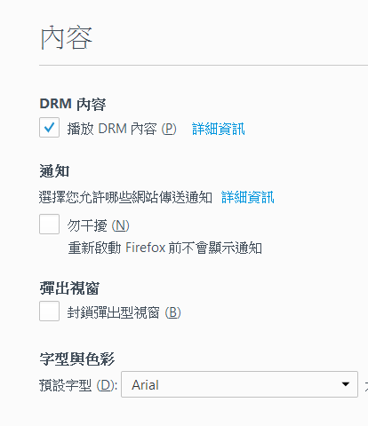

公司簡介
沙龍會總部位於馬尼拉市中心的商業區，在菲律賓註冊成立並持有當地政府許可合法博彩牌照，我們推出的所有遊戲都必需經過菲律賓博彩理事會嚴謹的審核及監控，=務求給客戶提供公平以及安全的遊戲環境。本公司設有現場及線上各種遊戲裝置，所有採用的軟體及硬體都是市場上最高品質及最先的技術，即使客戶安坐家中我們都可以為客戶提供品質優良的高清晰線上娛樂。除娛樂場外，我們還提供體育、彩票、老虎機和各式賭場遊戲。為了方便用戶，我們採用一戶通投注平台，只要使用一個帳戶即可體驗所有高品質的娛樂產品。我們除致力提升產品外，同時也十分重視客戶的滿意度，所以公司每位新加入沙龍會的員工都必須經過專業培訓及實習活動，務求把最優質的服務帶給所有客戶。我們的全天候廿四小時的客戶服務中心，可以隨時為客戶解答所有問題。我們保證客戶不只會對我們的產品感到滿意，同時也會對整體的服務給予肯定。

| 標題 | 狀態 |
|---|---|
| 2017-05-05 08:10 | |
| 2017-05-05 08:10 | |
| 2017-05-05 08:10 | |
| 2017-05-05 08:10 | |
| 2017-05-05 08:10 |
傳統百家樂
本遊戲採用8副牌來進行，遊戲牌數合計416張，9點或以下的牌按面值點數，A牌是1點，10點及公仔牌則是0點計算。閒丶莊家各先派兩張牌，以閒家先發，如第一輪末分出勝負需再按牌例發第二輪的牌，最多每方３張牌，誰最接近9點即為勝方，而相同點數即和局。
百家樂博牌規例
| 閒兩牌合計點數 | (閒家) | 莊兩牌合計點數 | (莊家) |
| 0 | 必須博牌 | 0 | 必須博牌 |
| 1 | 必須博牌 | 1 | 必須博牌 |
| 2 | 必須博牌 | 2 | 必須博牌 |
| 3 | 必須博牌 | 3 | 若閒家博得第三張牌是8點，毋須博牌 |
| 4 | 必須博牌 | 4 | 若閒家博得第三張牌是*1,8,9 或10點，莊家毋須博牌 |
| 5 | 必須博牌 | 5 | 若閒家博得第三張牌是*1,2,3,8,9 或10點，莊家毋須博牌 |
| 6 | 不得博牌 | 6 | 若閒家博得第三張牌是*6 或 7點，莊家必須博牌 |
| 7 | 不得博牌 | 7 | 不得博牌 |
| 8 | 例牌，即定勝負 | 8 | 例牌，即定勝負 |
| 8 | 例牌，即定勝負 | 9 | 例牌，即定勝負 |
莊閒兩方各得6、7點，即和局。
• 選擇押莊贏 1賠0.95 抽水5%
• 選擇押閒贏 1賠1 免抽水
• 選擇押和局 1賠8 免抽水
免佣百家樂
免佣百家樂是由傳統百家樂演變而來，兩者的玩法非常相似，不同的是免佣百家樂增加了一項超6的特別投注，莊家的賠率也有別於傳統百家樂。
| 派彩: | 莊贏賠率 | 閒贏賠率 | 和賠率 | 超6賠率 |
| 傳統百家樂 | 1:0.95 | 1:1 | 1:8 | - |
| 免佣百家樂 | 1:1 (如莊6點贏，1:0.5) | 1:1 | 1:8 | 1:12 |
在免佣百家樂中
1. 選擇押莊贏 1賠1 免抽水（如莊6點贏， 1賠0.5）
2. 選擇押閒贏 1賠1 免抽水
3. 選擇押和局 1賠8 免抽水
4. 選擇押超 6 (即莊6點贏) 1賠12 免抽水
骰寶盅
1. 骰寶遊戲採用三粒骰子，客戶可在投注時間內下注投注項目。
2. 投注時間結束後，三粒骰子在自動振動骰盅內進行滾動。當振動時間完畢後，靜止的三粒骰子朝上一方的點數便是該局的結果。
3. 因斜骰或疊骰...等因素令結果不能清析判定。監場人員有權把該次結果設為無效。該局投注會按重新搖骰後的清析結果計算。
4. 當遊戲結果出現圍骰，投注（大／小 ）或（單／雙）項目均作為輸計算。
| 投注種類 | 說明 | 賠率(不連本金) |
| 點數總和 | ||
| 大 | 總點數為11至17 | 1:1 |
| 小 | 總點數為4至10 | 1:1 |
| 單 | 總點數為5, 7, 9, 11, 13, 15, 17 | 1:1 |
| 雙 | 總點數為4, 6, 8, 10, 12, 14, 16 | 1:1 |
| 4或17點 | 總和為4或17點 | 1:50 |
| 5或16點 | 總和為4或17點 | 1:18 |
| 6或15點 | 總和為6或15點 | 1:14 |
| 7或14點 | 總和為7或14點 | 1:12 |
| 8或13點 | 總和為8或13點 | 1:8 |
| 9, 10, 11或12點 | 總和為9, 10, 11或12點 | 1:6 |
| 組合 | ||
| 圍骰 | 投注出現指定的三顆相同骰子 | 1:150 |
| 全圍 | 投注出現任何的三顆相同骰子 | 1:24 |
| 兩顆骰組合(對子) | 投注的兩個點數(雙骰)必須在結果內出現 | 1:8 |
| 兩顆骰組合 | 投注的兩個點數必須在結果內出現 | 1:5 |
| 四中三 | 投註四個點數必須在結果內出現其中三個 | 1:7 |
| 單骰點數 | 投注單點出現一次 | 1:1 |
| 投注單點出現兩次 | 1:2 | |
| 投注單點出現三次 | 1 | |
輪盤
輪盤的玩法為將一顆小球投在有37個號碼格的輪盤上轉。當輪盤停止轉動，球將落在其中一格中。輪盤的目標是猜測球會落在哪一格上。如果猜到正確的號碼，您將依賠率而贏得彩金。賠率的大小將根據投注的種類而計算。
遊戲玩法
左擊您想要下注的籌碼，然後將籌碼用滑鼠拖到賭桌上的投注區域內。如果賭桌沒有您想要投注籌碼額值，只需在投注完上一次後再投註一次。例如， 想要投注 $30， 点击$25且將它放置於賭桌上，然後再點擊 $5且將它放置於$25籌碼上。您的總投注會顯示在'目前投注'視窗上。您可點擊'再次下注'以重複您的下注金額。您必須在將籌碼放置於賭桌上後點擊'下注'，您的下注才會有效。如果您的下注低於賭桌的最低投注限制，或高於最高限制，您的下注金額將自動駁回。 您可在輪盤桌上下注不同種類的賭注。每種類型的下注包含某些號碼的範圍，且每種類型都有它的賠率。檯面上三個號碼的短線排列稱之為行(rows)， 而有十二個號碼，較長的稱之為欄(column)。前五種下注都是投注在號碼格上或它們之間的線上且稱為內圍，而最後三種則是下注在特別方格中和檯面的左邊且稱為外圍。以下為不同下注的不同賠率:
| 下注種類 | 註釋 |
| 直注 | 將籌碼下注到任何一個號碼上（包括零） |
| 分注 | 將籌碼下注到任何兩個號碼之間的線（零除外） |
| 街注 | 將籌碼下注到任一行號碼的最後。街注包含三個號碼 |
| 角注 | 將籌碼下注到四個數位方框交差的那個角區以賭那四個數位 五個號碼 |
| 線注 | 將籌碼下注到兩行相交的最頂部的交點處，線注包含兩行的號碼也就是六個號碼 |
| 列注 | 將籌碼下注到每列數位底部都有帶' 2 to 1'字樣的方框，所有欄的號碼，總共有12個號碼。 （每欄的零都不包含在內） |
| 12注 | 將籌碼下注到有'第一組 12'、'第二組 12''和'第三組 12'的 賭區以同時下注每區的12個號碼，從1到36。 |
紅色 / 黑色， 雙數 / 單數 將籌碼下注到台桌左側的某個賭區，這些賭區幾乎佔據了整個台桌的 一半。那裡的每個賭區都包括 18 個數位。在此賭區內贏錢。 (0到36不包含在這些賭區內)。一旦轉動結束，贏的號碼將在賭桌上顯示
賠率
| 下注 | 賠率 |
| 1個號碼 | 35:1 |
| 2個號碼 | 17:1 |
| 3個號碼 | 11:1 |
| 4個號碼 | 8:1 |
| 6個號碼 | 5:1 |
| 12個號碼 | 2:1 |
| 18個號碼 | 1:1 |
內圍和外圍的最高賠率
內圍最高賠率 = $250
外圍最高賠率 = $250
請注意：
玩家必須遵守管理部在幫助所描述的下注限制，您可贏的最高金額將依最高下注金額而決定。換句話說，如果您下超過最高投注金額，那麼您將只贏取相當於最高投注所贏的彩金。如果您贏的話，任何高於最高下注金額的餘額將不會算在賭注內，差額將會退還給您（下注金額－最高下注），但如果您輸的話，那麼將輸掉全部下注且不會收到任何退款。
龍虎
玩法及賠率：龍虎遊戲非常簡單，荷官只派兩門牌，即龍及虎。每門各派一隻牌，雙方斗大，最大為K，最小為A。玩家可投注龍、虎和三門，如買中龍或虎，1賠1，兩門的牌相同即和，買和賠率為1賠8。如開和，投注龍或虎兩門，各輸一半。
21點
超級21點的遊戲目標，玩家想要贏得牌局，手上的牌點數必須比莊家的牌點數大，盡量接近21點但不可超過21點。遊戲不需理會其他玩家的牌點數，玩家只與莊家的牌點數作對抗，所有玩家的牌均是牌面向上的。 本遊戲一靴牌共有8副牌合共416張牌，超級21點玩法簡單，只需按上述的遊戲目標，跟據遊戲指示玩家作出決定便成了。
詞彙解釋
• Blackjack: 簡稱BJ，一張A牌及一張10點的牌所組成的21點，初始注金按1賠1.5派彩。
• 21點: 多於兩張牌所組成的21點。
• 爆牌: 手上所有牌點數加起來超過21點稱為爆牌。玩家會即時輸掉所有初始及加註的金額。
• 和局: 玩家與莊家同時獲得BJ或玩家與莊家同時非BJ但點數相同時，該局視為和局，初始注金及加註金退回。
• 硬牌: 該手牌沒有A牌, 或A牌只能按1點計算。
• 軟牌: 該手牌A牌可按1點或11點計算。
紙牌點數
• 2至10點按牌面值計算
• J, Q, K按10點計算。
• A作1或11點計算，若加上11點後成為爆牌，則按1點計算。
玩家選擇項目
• 初始下注: 每局發牌前的投注項目，玩家必須對該牌局，根據玩家的喜好及賭桌可接受的投注上下限內，作出相應的投注金額。
• 對子: 每局發牌前的投注項目，玩家首兩張牌是對子可按1賠11派彩，10, J, Q及K視為不同牌。
• 要牌: 玩家選擇要下一張牌。
• 不要牌: 玩家選擇不再要牌，以當時的手牌點數與莊家對抗。
角子老虎
所有被本公司接受於角子老虎的投注（‘角子機，玩家對玩家，撲克，虛擬和賭桌遊戲投注’）將根據角子老虎的投注規則。
如有任何爭議於角子老虎的投注規則，一切將以本公司的解釋為準。
角子老虎的下注只會在系統分配識別碼（一個“投注識別碼”）之後才被視為投注接受。如果您希望在任何時候觀看您的角子老虎投注詳情，您可以到賬目一頁查詢。
如果遊戲發生故障，所有的遊戲和支出將被作廢。
任何形式的技術故障，包括但不局限於軟件，硬件或連接故障，將導致所有受影響的遊戲被宣布投注無效，無視任何指示性的結果。
本公司進一步保留角子老虎投注作廢的權利，如：
• 存在不正確或不完整的投注詳情 。
• 本公司有任何質疑於客戶參與欺詐，合謀，洗黑線或其他非法活動 。
• 本公司相信該客戶是未滿18歲或在他/她的管轄範圍低於賭博的法定年齡 。
• 被接受的投注超過於被設置的遊戲限制 。
• 投注數額不存在於客戶的賬目 。
• 一個錯誤（人為或其他）或系統故障導致使用不正確的賠率。
• 技術問題，例如：通訊失敗，瑕疵，幹擾，延遲，病毒，拒絕服務攻擊，或出現數據損壞或如果一個技術缺陷而造成過多或不尋常的獎金。
當某個下注被不恰當地處理，不管基於錯誤（人為或其他）或系統故障，結算將被視為無效和將被更正。如該客戶的戶口沒有足夠的餘額，該客戶將被要求歸還相關的款項於本公司。
遊戲進行當中連接失敗
注意：如果您在玩該遊戲的中途網絡中斷，請重新連接您的網絡及重新登入該遊戲。您將被自動定向到之前被中斷的遊戲以繼續您之前的遊戲。在沒有實行“自動運行” 的事故當中和您的遊戲由於電流短路而被中斷，切斷，取消，您有24個小時『或48個小時』，從您的遊戲中斷直到再連接，登入且恢復最接近的中午12點算起。任何未完成的遊戲如沒有繼續將被視為輸。
如果連接很弱，請中止遊戲，重新連接以獲得較好的連接才繼續遊戲。在撲克里，如游戲運行當中網絡失去連接，會有兩個情況。第一個情況是，如果您還未下注，您的手牌將被折疊，同時您將被放置於休息狀態。第二個情況是，如果您已下注而又斷線了，遊戲將會繼續，玩家的輸贏將被據此計算。
客戶必須明白本公司是唯一的決策與判決人，本公司擁有絕對的權利去更換，取消，中止，刪除，修改或重新啟動任何遊戲，拒絕或取消有關下注，基於偶然事件的原因，戰爭行為，自然災害，停電，公司職員違反標準工作操守的人為錯誤或疏忽或過失，軟件故障和任何不可抗力的事件。本公司的決策是有約束力和最終的。
本公司以一般條款與細則保留任何時候更改任何有關這些遊戲的投注規則的權利。
時時彩
1.玩法介紹
分分樂的開彩結果根據上海、江西、中國社會福利3D彩票、重慶、天津及新疆官方網站。由5組號碼，每組號碼從0至9個號碼中隨機搖出3個數字(或5個數字) 作為開獎號碼，依這3個號碼(或5個號碼) 變化成各式不同的玩法，猜中號碼個數或玩法可以獲得不同等級的獎金。開獎時間和相對應地區的官方站點同步。分分樂遊戲分為十二種玩法，分別是“珠仔”、“珠仔單雙”、“珠仔大小”、“珠仔串關”、“二星組選”、“三星組選三” 、“三星組選六”、“和值”、“和值七彩”、“和值單雙”、“和值大小”和“和值大小單雙過關”。各種玩法的詳細規則如下：
| 玩法 | 規則 | |
| 珠仔 | 珠仔 | 選擇單個號碼：即萬位、千位、百位、十位、個位中任意一位中的一個號碼。 [例如：投註十位的號碼8， 共一注。開獎結果為：“23384”與投注結果相符，即中獎。 ] |
| 珠仔 (複式) | 選擇多個號碼：即萬位、千位、百位、十位、個位中任意一位中的多個號碼。 [例如：投注百位的號碼4、3、9，共三注， 開獎結果為：“48376”與投注結果相符，即中獎。 ] | |
| 四星串關 二星串關 三星串關 四星串關 五星串關 |
投注任意號碼組合，即萬位、千位、百位、十位、個位的號碼組合，並完全順序。 [例如三星串關：投注百位：“4”，十位：“3”，個位：“5”。組成三星串關，共一注。開獎結果為：“48435”與投注結果相符，即中獎。 ] | |
| 珠仔串關(複式)
二星串關 三星串關 四星串關 五星串關 |
選擇多個號碼及任意號碼組合：萬位、千位、百位、十位、個位分別選擇多個號碼組合，並完全順序。 [例如三星串關：投注百位：“4、5、6”十位：“3、2、4”個位：“5、6、4”組成三星串關複式，共27注。開獎結果為：“48435”，即中獎。 ] | |
| 大小 | 投注萬位、千位、百位、十位、個位開獎結果的大、小，0-4為小，5-9為大。 [例如：投注個位“大”，開獎結果為：“48436”個位號碼特徵為：大。即中獎。 ] | |
| 單雙 | 競猜測萬位、千位、百位、十位、個位開獎結果的單、雙。 [例如：投注個位“雙”，開獎結果為：“48436”個位號碼特徵為：雙。即中獎。 ] | |
| 串關 | 投注萬位、千位、百位、十位和個位開獎結果的大、小、單、雙的組合，並完全順序。注：在同一位數中，大小單雙不能互串。 [例如：投注個位"雙"，十位"大"。開獎結果為：48486。個位號碼與十位號碼特徵與投注結果相符，即中獎。注：個位數里大小單雙不能互串] | |
| 組選2 | 組選 | 投注2個或者以上號碼，你可贏得組號裡出現與您選擇2個或以上相同的投注。 （例如：投注號碼“2，8”，總投注為1注。開出的結果為“11282”，您選擇的2個號碼與開出的組號裡面符合，即中獎） 個位與十位不能是相同的數字。 |
| 複式 | 在第一和第二數位上選擇1個或者以上號碼投注，您將贏得與數位上與您選擇相同的投注。 （例如：分別在第二數和第一數位位投注號碼“1，8”和“2，8”。如果開出的組號碼為“11682”，您將贏得單倍賠率注金。如果開出的組號碼為“”11688，您將贏得雙倍賠率注金。） | |
| 組選3X3 | 單選 | 在最後第一，第二和第三數位上分別投註一個號碼，其中兩個號碼必需相同(不限順序)。如開彩結果的最後三個位數與您所投注的其中兩個號碼相同，您則中獎。例子：您投注號碼"2, 2, 8"。開彩結果為"11282"，其中兩個號碼相同，您則中獎。 |
| 多選 | 選擇兩個或者多個數字。不考慮數字所處位置，如果您選擇的數字與開獎結果中最後3個數字（第三個數，第二個數，第一個數）一致，您贏。 （例如您選擇了"2，8，9，4"，開獎結果"11282"，最後的3個數字2和8 在你選擇中，則中獎） | |
| 組選3x6 | 投注3個或者以上號碼，您可贏得後三位數中與選擇相同且不重複的號碼。 [例如:投注號碼"2，8，9"，總投注為1注，開獎結果為："11928"，3個號碼與您投注相同且不重複，則中獎] | |
| 和值 | 和值 | 從0-27個號碼中，選擇1個和值進行競猜後三碼即百位、十位和個位的總和。 [例如：投注和值“12”共一注，開獎號碼為“11552”，後三位號碼合計總和為12，即中獎] |
| 七彩 | 從七個顏色中選擇1個顏色區間後三碼即百位、十位和個位的總和的區間[例如：投註七彩和值“藍色[16-19]”共1注，開獎號碼為“ 11557”，後三位號碼合計總和為17，在藍色[16-19]之間，即中獎。 ] | |
| 和值單雙 | 投注後三碼，即百位、十位和個位的和值單、雙的特徵。 [例如：投注和值單雙的“雙”。開獎結果為：48426。後三位號碼合計總和12，單雙特徵為：“雙”，即中獎。 ] | |
| 和值大小 | 投注後三碼，即百位、十位和個位的和值大、小的特徵。 [例如：投注和值大小“小”。開獎結果為：48130。後三位號碼合計總和4，特徵為：“小”，即中獎。 ] | |
| 和值串關 | 投注後三碼，即百位、十位和個位的大、小、單、雙的特徵的組合. [例如：投注和值中大小“小”，單雙“雙”。開獎結果為：48130。後三位號碼合計總和4，特徵即為：“小”“雙”，即中獎。 ] | |
投注
1. 串關：投注惟一排列的號碼。
2. 組選：投注號碼的多種排列。如：123，排列方式有123、132、213、231、312、321，共計6種。
3. 組選三：在三星組選中，如果一注組選號碼的3個數字有兩個數字相同，則有3種不同的排列方式，即3個中獎機會，簡稱組選三。示例：112，排列方式有112、121、211。
4. 組選六：在三星組選中，如果一注組選號碼的3個數字各不相同，則有6種不同的排列方式，因而就有6個中獎機會，簡稱組選六。示例：123，排列方式有123、132、213、231、312、321，共計6種。
5. 大小單雙：開獎號碼0～9十個數字中，0～4為小，5～9為大，1、3、5、7、9為單。 0、2、4、6、8為雙。
1
p>
1.開獎
a. 上海： 官方開獎銷售時間每天10:30至21:30， 每30分鐘一期，每天10:00第一期開獎，22:00最後一期開獎，共23期。
b. 重慶：官方白天開獎時間每天10:00至21:50，每10分鐘一期，夜間遊戲每天晚上10點至凌晨2點，5分鐘一期，共120期
c. 江西： 官方開獎銷售時間每天09:00至23:10，每10分鐘一期，共84期。
d. 福利3D： 官方開獎銷售時間每天21:00，一天一期。
e. 天津：官方開獎銷售時間每天09:00至23:00，每一期間隔10分鐘，每天共84期。
f. 新疆：官方開獎銷售時間每天中午12點至第二天凌晨2點，每一期間隔10分鐘，每天共84期。
快樂彩
KENO(基諾)玩法起源於中國，這種遊戲由中國移民於19世紀晚期引入美國。起初，人們用80個漢字來玩基諾遊戲，而在美國這些漢字則由80個阿拉伯數字所代替。 KENO名字源於拉丁文和法語的詞根，大意是選中5個就有可以獲獎。
現在世界多個國家和地區發行KENO遊戲，已經成為一種流行的大眾數字遊戲，普通的官方玩法通常從01-80個數字中任選1-10個數字組成一注，開獎時，隨機搖出20個數字作為開獎號碼，根據選中號碼的個數獲得不同等級的獎金，通常選中數字越多，獎金越高，通常官方KENO只使用投注額的50%作為獎金派發，返獎率較低。
| 類型 | 定義 | 賠率 |
| 1) 大 / 小 |
大 (1410 - 811)
小 (810-211) |
1.95 |
2) 超過 / 少於 |
超過 (5,6,7,8,9)
少於 (0,1,2,3,4) |
1.95 |
3) 單 / 雙 |
單 (1,3,5, ……)
雙 (2,4,6, ……)
|
1.95 |
4) 頭 / 尾 (號碼1至40為頭盤號 碼，41至80為尾盤號碼。 開出 的20個開獎號碼中： 如頭盤號 碼佔多數（超過10個）時，此 局為頭盤； 尾盤號碼佔多數時 為尾盤； 頭盤號碼和尾盤號碼 在此局開出的數目相同時（各 10個數字），此局為和盤。 ) |
頭 (1至40)
和 |
2 |
5) 五行 (金 木 , 水 火 & 土 ) |
金(210-695) 總20勝出號碼
|
9.3 |
珠仔玩法是在80個號碼中選出1至5個號碼組合成一組進行的投注。會員將選擇的投注號碼與中獎號碼對照，根據所選號碼與中獎號碼相符的個數多少（順序不限）確定相應的中獎獎級。
| 選5 | 選4 | 選3 | 選2 | 選1 | |
| 中 5 | 200 | 無 | 無 | 無 | 無 |
| 中 4 | 22 | 50 | 無 | 無 | 無 |
| 中 3 | 3 | 5 | 20 | 無 | 無 |
| 中 2 | 無 | 2 | 2 | 10 | |
| 中 1 | 無 | 無 | 無 | 無 | 3 |
| 中 0 | 無 | 無 | 無 | 無 | 無 |
例如：投注者購買的是1，2，3這三個號碼為一個組合，且該期開獎號碼中包含1，2，3這三個數字，則視為投注'3中3'的玩法者中獎；若開出號碼中只有1，2則視為投注'3中2'的玩法者中獎。
例如：開獎號碼為01, 04, 05, 10, 11, 13, 20, 27, 30, 32, 33, 36, 40, 47, 54, 59, 61, 64, 67 & 79
投注06, 20, 30 & 67
則視為投注‘4中3’, 3個中獎號碼為20, 30 & 67. 下注100美元， 得以100 x 5.0 = 500美元付款
足球規則
-除非另有說明，否則足球投注的結算將以比賽的常規時間（包括傷停補時）為準，不包括加時賽和點球賽的成績。 -加時賽和點球大戰會另外提供盤口和行情。 -若球賽原定的比賽時間異於常規時間（如各種錦標賽或友誼賽的特別比賽時間），所有投注將依照原定的比賽時間來結算。 -關於不正規的比賽時間，除非早於比賽前已公佈在網站上，否則投注將被作廢。 -若賽事少於正規時間，本公司有權將投注結算擱置至72個小時或必要的其他時限以查實賽事情況和賽果。賽事情況將依據官方網站管理機構所發布的賽果（如有）為準。除非官方所發布的賽果明顯錯誤，或相關賽事並無官方網站或官方網站未有賽果發布 ，那麼本公司將竭力調查以確定正確的賽果。在此情況下，本公司的決定將是最終決定，所有投注皆依據本網站規則結算。
下注類型
1X2
1X2 是指在單一賽事中投注於三種可能的勝利結果中的任何一種。 1 表示首先被提及的隊伍（通常是主隊）；X 代表比賽結果平手；2 代表第二個被提及的隊伍（通常是客隊）。
奇數
p>是指投注結果由賽事最後結果的總分（射門分數、得分情況等）來決定。
讓分盤
p>是指將假定的讓分數預先加給其中一方參賽者或隊伍（在賽事開始前該參賽者或隊伍便以該讓分數領先）並據此進行投注。將讓分數加上實際比賽結果後，得分較高的參賽者或隊伍即為贏家。
3項讓分投注包括滾球
讓分投注的結算是以讓分賠率為準，按讓分後的賽果來計算的。
大小盤
strong>是指投注結果由賽事最後結果的總分（射門分數、得分情況等）來決定。如果總分高於“大/小”預先指定的總分，則投注“大”的為贏家；如果總分低於“大/小”預先指定的總分，則投注“小”的為贏家。
上半場投注
投注將按照半場正確比分盤口進行結算，若賽事在上半場結束前被中止，投注作廢。
下半場投注
投注將按照下半場正確比分盤口進行結算包括傷停時間，若賽事在結束前被中止，投注作廢。
00:00- 30:00 分鐘投注& 00:00- 70:00 分鐘投
結算依據為比賽在指定時間的賽果. 如果賽事在指定時間前被中止，所有投注作廢。
雙重機會
該投注盤有以下選項：
1或X - 如果主隊勝出或者兩隊打和，該選項投注為贏。
X或2 - 如果客隊勝出或者兩隊打和，該選項投注為贏。
1或2 -如果主隊勝出或客隊勝出，該選項投注為贏。
進行投注結算時：如果比賽是在中立場舉行，列在前面的球隊將被視為主場。
平手無效
投注將按照常規的比賽結果來計算的。比賽結果出現平手，所有的注單一律取消退回本金。
半場投注
p>預測半全場雙重賽果的投注必須指明半場賽果和全場賽果。不包括加時賽和點球賽的成績。主隊表示首先被提及的隊伍，客隊表示第二個被提及的隊伍。
開球隊伍
開球隊伍是指投注比賽中首先開球的隊伍。如果開球后賽事中止，所有投注仍然有效。
混合過關
過關投注是指單一賭注中至少投注兩種以上的項目組合。如果投注的所有項目全贏，則投注者將獲得兩種項目的組合賠率的金額。如果有一個（或以上）項目沒有贏，則投注者輸掉過關投注。如果一個（或以上）項目延期，則該項目的賠率恢復為 1.00。 有關更多詳情，請參閱“超級過關”。
波膽
波膽是指投注預測完整比賽時間結束後的最終比分。不包括加時賽和點球賽的成績。投注“波膽”時，如果要贏得“UP 5”，投注者選擇的隊伍必須淨贏五球或以上。例子：5-0, 6-1, 7-0, 7-1, 7-2。
總進球數
進球數是指由賽事中的總進球數決定投注結果。加時賽、金球和點球大戰不計入投注結果。
滾球總進球數
滾球投注於進行中賽事的總進球數，加時賽、金球和點球大戰不計入投注結果。
單一球隊大於
p>
單一球隊大於/小於是指投注某隊在單場賽事中的得分。
如果總進球數大於“大於/小於”預先指定的總進球數，則投注“大於”的為贏家；如果總進球數低於“大於/小於”預先指定的總進球數，則投注“小於”的為贏家。
單一球隊上半場
p>投注於賽事中的單一球隊上半場/下半場的總進球數。如果賽事在指定時間前被中止，所有投注作廢。
總進球數單雙
是指由賽事的總進球數單雙決定投注結果，加時賽、金球和點球大戰不計入投注結果。賽果“0”將以雙計算。
3項總進球數投注（獲得最多進球的半場）
投注於指定賽事中的上半場較多的總進球數，下半場較多的總進球數或相等的總進球數。
聯賽入球總得分
主隊總進球數與客隊總進球數是指在特定日期的特定聯賽中，主隊的總進球數與客隊的總進球數。主隊表示首先被提及的隊伍，客隊表示第二個被提及的隊伍。
得分球員
只接受正規比賽的投注。所有參加比賽的球員均將視為“參賽選手”。如果選手未參賽，則投注無效。烏龍球和點球將不予以計算。
得分球員球衣號碼單
p>投注於指定賽事中的得分球員球衣號碼總數單/雙，例如：兩位得分球員球衣號碼分別為10 和 23， 10+23 = 33，最後的號碼為3，成績是單。若賽事最後比分0-0，所有投注將被退還。
零失球
零失球是指投注在比賽中零失球，也就是未失分的隊伍。如果賽事中止，所有投注均作廢。
優勝冠軍
p>
-總冠軍是指投注於賽事、比賽或錦標賽的贏家。
總冠軍排名是指投注於參賽者在賽事、比賽或錦標賽中獲得的指定名次。
-如果參賽者沒有出場參加賽事、比賽或錦標賽，則所有投注於該參賽者／參賽者的“冠軍盤”投注依然有效。
-如果任何“總冠軍賭盤”中宣布的結果為“不分勝負”，則一半賭金將分配給完全賠率，而另一半賭金將全部喪失。如果超過兩名參賽者“不分勝負”，則按比例分配賭金。
最先進球
p>
-率先進球/最後進球是指投注哪個隊伍會在比賽中率先進球或射進最後一球。
- F 表示率先進球。 L 表示射進最後一球。 NG 表示賽事中沒有隊伍射門得分。
-烏龍球算作進球隊伍的得分。
-如果在得分后賽事中止，“率先進球”（以及“無進球”）的投注仍有效，但“最後進球”的投注均作廢。
-如果在沒有進球的情況下賽事中止，則“率先進球”、“最後進球”和“無進球”的投注均作廢。
先進球
滾球投注於進行中賽事的率先進球/最後進球/下一隊進球。
兩隊都有得分
有 = 兩隊都有進球。無= 兩隊中任一球隊沒有進球（包括兩隊都沒有進球）。如果比賽在兩隊都進球後被中止，則有的投注為贏，無的投注為輸。然而如果比賽在被中止或推遲時沒有任何一隊進球，則所有投注均為作廢。
首粒入球時間投注
首粒入球時間投注是指賽事的第一粒入球的時間在盤口以上或以下。所有入球時間本公司將依據現場直播為準。如果比賽在入球後被中止，投注依然有效。然而如果比賽在未入球被中止，所有投注均為作廢。
首次發生
第一個角球
第一個角球是指投注比賽中獲得第一個角球的隊伍。
第一個球門球
當球越出球門線而最後觸球的球員為攻方，那麼守方球隊將獲得球門球。由守門員接球後開出的球門球不計算在內。
第一張罰牌
投注比賽中最先收到罰牌隊伍。若兩名以上的球員因為同一個事件收到罰牌，則以裁判首先亮牌的球員為贏家。若在第一張罰牌發出后賽事中止，所有投注仍有效。若在第一張罰牌發出前賽事中止，所有投注皆作廢。
第一次換人
是指投注賽事中第一次換人的隊伍。
第一次越位
是指投注最先被判越位的隊伍。
第一個界外球
是指投注比賽中獲得第一個界外球的隊伍。
第一個任意球
是指投注比賽中獲得第一個任意球的隊伍。
最後發生
最後一個角球
是指投注比賽中獲得最後一個角球的隊伍。
最後一個球門球
是指投注比賽中獲得最後一個球門球的隊伍。
最後一張罰牌
投注比賽中最後收到罰牌隊伍。若兩名以上的球員因為同一個事件收到罰牌，則以裁判最後亮牌的球員為贏家。若賽事中止，則所有投注作廢。
最後一次換人
是指投注賽事中最後一次換人的隊伍。
最後一次越位
是指投注最後被判越位的隊伍。
最後一個界外球
是指投注比賽中獲得最後一個界外球的隊伍。
最後一個任意球
是指投注比賽中獲得最後一個任意球的隊伍。
首次產生時間
是指投注比賽中產生（入球，角球，門球等）的時間。
角球總數包括滾球
-是指投注比賽中的總角球總數。公司將根據現場直播計算投注結果。
-除非角球實際開出（與判罰角球相對），否則角球不計入在內。
-重新執行的角球將計算為1次。
-所有投注將以比賽的常規時間為準，不包括加時賽。
點球
p>是指投注比賽中球員是否有獲得點球/罰球，獲得點球/罰球但未獲得分也計算在內。
紅罰牌
是指投注比賽中是否獲得紅罰牌。
總罰牌數包括滾球
是指投注比賽中的總罰牌數。公司將根據現場直播計算投注結果。
任何完賽后的更改將不受處裡，非球員(球團經理、教練、替補球員)收到的牌不列入計算。
計分方式如下：
1黃牌 = 1分
1紅牌 = 2 分
每名球員的最高點計數為3分;第一張黃牌1分和紅牌2分，第二張黃牌將不被計算。上半場投注將按照半場正確比分盤口進行結算。
总黃牌数包括滚球
是指投注比賽中的總黃牌數，紅牌不列入計算。公司將根據現場直播計算投注結果。 任何正規比賽后的更改將不受處裡，非球員(球團經理、教練、替補球員)收到的牌不列入計算。上半場投注將按照半場正確比分盤口進行結算。
換人次數
是指投注賽事中換人的總數，包含任何讓分。如果賽事中止，所有投注均作廢。
越位次數
是指投注賽事中兩隊越位的總數，包含任何讓分。如果賽事中止，所有投注均作廢。
上
p>所有的投注都是以正規比賽為準，不包括加時賽。注單是以於上半場或下半場結束前球賽第四裁判員所判給的受傷延長補時結算。如果賽事於上半場時段取消，所有投注在上/下半場結束前受傷延長補時的注單一律取消退回本金。如果賽事於下半場時段取消，所有投注在下半場結束前受傷延長補時的注單一律取消退回本金。上半場投注依然結算。
15分鐘大小盤
-15分鐘大小盤是指投注結果由賽事每15分鐘的最後結果的總分（入球分數、角球數、牌數,得分情況等）來決定。
-如果總分大於“大小盤”預先指定的總分，則投注“大盤”的為贏家；如果總分少於“大小盤”預先指定的總分，則投注“小盤”的為贏家。
-15分鐘大小盤是根據現場直播的時間為準，注單將根據正確的進球時間 (當球越過龍門線) / 角球數(實際開出) /罰牌發出時間來進行結算。
-如果球賽中止或暫停，所有投注於未完成的特定15分鐘大小盤將視為作廢。如果時間已超過投注的特定15分鐘大小盤，那麼所有投注於將視為有效。
點球大戰
-點球大戰是指投注哪一隊會在點球大戰中勝出。
-在讓分賭盤中，結果包含點球大戰中所有得分的罰球數，包括突然死亡。在大於/小於賭盤中，結果僅包含點球大戰中正規十個罰球，不包括突然死亡。
籃球規則
1. 以下為籃球項目的投注種類：若比賽提前結束，所剩餘的比賽時間必須不多於5分鐘，投注方為有效，已有明確結果的投注除外（例：時段投注）。
2.投注將根據官方公佈的最終得分結算，包括加時賽，除非另有說明。
3. 美國大學賽的盤口所顯示的主、客隊場地資訊僅供於參考。
以下為籃球項目的投注種類：
(1) 非滾球投注
(i) 亞洲盤
(ii) 最先得分
(A) 投注結算將以比賽中率先獲得分數的球隊為準。
(B) 若比賽在已有得分的情況下腰斬，所有投註一律有效。
(iii) 單節得分最高的球隊
(A) 投注獲得單節分數最高的球隊，加時賽不包括在內。
(iv) 最後得分
(A) 投注結算將以比賽中獲得最後分數的球隊為準，加時賽的得分計算在內。
(B) 若比賽腰斬，最後得分的所有投注將被作廢。
(v) 單雙
(vi) 優勝冠軍
(vii) 大小
(viii) 時段投注
(A) 半場投注
(A1) 上半場的投注是根據第一節與第二節的得分總數來計算。
(A2) 下半場的投注是根據第三節與第四節的得分總數來結算。下半場投注亦包括加時賽的得分。
(B) 單節投注
(B1) 投注將根據每節的得分來結算。
(B2) 至於第四節的投注，加時賽的分數不計算在內。
(ix) 優先達20分
(A) 下注比賽中率先獲得20分的球隊。
(x) 球員/球隊：總分/ 籃板/ 助攻/ 抄截/ 阻攻/ 三分球
(A) 投注根據球員或球隊在某特定比賽的統計表來結算。
(B) 沒開賽之球員的投注將被退還。
(C) 若球員已開賽但沒有獲得任何分數、籃板或助攻，則將以[0]分計算。
(2) 滾球投注
(i) 亞洲盤
(ii) 大小
拳擊
1.作為投注用途，某拳手在比賽中被取消資格將被視為被對方擊倒（Knockout）。
2.若拳手未能在某回合響鈴時給予回應，或者在回合間被取消資格，那麼其對手將被視為在前一回合獲勝。
以下為拳擊項目的投注種類：
(1) 非滾球投注
(i) 亞洲盤
(ii) 单双
(A) 投注拳手获胜的回合为单数或双数。
(iii) 大小
(A) 投注拳手获胜的回合大过或小过经营者预定的盘数。
(2)滾球投注
(i) 亞洲盤
賽車規則
1.若車賽中斷或延誤，並未於原定開賽時間起的72個小時內恢復比賽，所有投注將被作廢和退款，已有明確結果的投注除外。
2.官方練習賽后無開賽的車手之投注將不被退還。
3.賽果將以頒獎時所公佈的為準。
4.排位賽的投注是按照排位賽結束時所指定的起跑排位為準。
5.官方在排位賽時所實施的處罰將計算在內。排位賽后的其他排位降級或升級則除外。
6.以下為賽車項目的投注種類：
(1) 非滾球投注
(i) 最快圈數
(A) 官方於該場比賽頒獎時所公佈的賽果為準。
(ii) 配對賽
(A) 若配對賽其中一位車手未參賽，投注將被作廢和退款。
(B) 若兩位車手在同一圈數均無法完賽，配對賽的投注將被作廢與退款。
(C) 配對賽的投注將根據相關車手完賽后的最終名次來結算。
(iii) 完成比賽的車手數
(A) 投注於順利完成比賽的車輛/電單車總數。
(iv) 單雙
(A) 單雙投注是根據車手的排名為單數或雙數而定。例：車手A以第一名完賽為單，車手B以第二名完賽為雙。
(B) 若參賽者因取消資格或意外及無法完成比賽，該參賽者的相關投注將被作廢與退款。
(v) 優勝冠軍
(vi) 首三名車手/騎士
(A) 投注之結果將根據領獎台的前三甲得主。
(vii) 不能完成第一圈的車輛數
(A) 沒參賽的車輛將不計算在內。
(viii) 輸贏比時
(A) 投注結算將以兩位車手相差的時間為準。
(B) 網站顯示的讓分盤以時間（秒）為標準，例：6.0
表示讓6秒給該車手。若投注大於或小於6.0，任何6秒以下（如5.99或5.8秒等）的時差將被視為小於6，而6秒以上（如6.01或6.2秒等）則被視為大於6。若時差正好是6秒（那就是6.00秒）則為和，投注將被退還。
(2) 滾球投注
(i) 配對賽
(ii) 優勝冠軍
北歐兩項
1.結算將根據頒獎時所公佈的賽果為準。若無進行頒獎儀式，結果將按照官方所公佈的賽果而定，隨後的上訴、資格取消或賽果更動皆不影響結算。
2.若比賽腰斬或延期，並未於原定開賽時間起的48個小時內恢復比賽，所有投注將被作廢和退款。
3.若官方更改原本列出的項目條件（包括但不限於場地更換、縮減比賽部分或回合、更改指定的項目等等），所有投注將被作廢。至於越野賽和冬季兩項，若官方已列明的距離有所更改，投注將被作廢；若實際距離有別，投注則有效。至於跳台滑雪項目，在一個回合完成後的賽果方為有效。
以下為冬季運動項目的投注種類：
(1) 非滾球投注
(i) 配對賽
(A) 在配對賽里，配對選手必須有開賽，投注方有效。
(B) 配對賽的盤口是指獲得最佳名次的選手。
(C) 若其中一位選手在回合開始後被取消資格或棄權，另一位選手將被視為獲勝者。
(D) 若其中一位選手在開賽后被取消資格或棄權，無論是在首回合結束前或兩位選手已晉級下一回合後，另一位選手亦將被視為獲勝者。
(E) 若兩位選手於不同的回合被取消資格，那麼獲勝者將是晉級至更高階段的選手。
(F) 冰壺：若比賽未完成，所有投注將被作廢。所有盤口的計算將包括延長賽。
(G) 北歐兩項 – 配對選手必須開始賽事的第一和第二部分，投注方有效。
(ii) 優勝冠軍
壁球
1.若比賽未完成，除了已有明確結果的時段投注，所有投注將被作廢。
2.比賽的局數將由主辦官方而決定。
3.若比賽的局數更改或和提供為投注用途的有異，所有投注將被作廢。
以下為壁球項目的投注種類：
(1) 非滾球投注
(i) 亞洲盤
(A) 盤數獲勝者
(B) 總分獲勝者
(ii) 單雙
(A) 單雙投注是依照比賽的完場總分為單數或雙數來結算，分數計算將包括因和局而增設的賽局分數。
(iii) 優勝冠軍
(iv) 大小
(A) 大小投注是依照比賽的完場總分來結算，分數計算將包括因和局而增設的賽局分數。
(v) 時段投注
(A) 所有投注將根據時段完畢的總分數來結算。
(B) 若指定時段/部分已完成，儘管比賽隨后腰斬，所有投注依然有效。
(2) 滾球投注
(i) 亞洲盤
(A) 盤數獲勝者
(B) 總分獲勝者
(ii) 時段投注
冰球
1.若比赛提前结束，所剩余的比赛時間必须不多于5分钟，投注方为有效，但已有明确结果的投注除外（如時段投注）。
2.除非另有说明，投注一概根据球赛结束的完场分数结算，并包括加时赛与点球赛的成绩。点球赛的成绩仅将以[1] 分作为获胜者的象征分数。
以下为冰球项目的投注种类：
(1) 非滾球投注
(i) 亞洲盤
(ii) 单双
(A) 单双投注不包括加时赛或点球赛的分数。
(iii) 優勝冠軍
(iv) 大小
(v) 時段投注
(A) 投注将以单节的分数来结算。
(B) 有关第三节的投注，加时赛的分数将不计算在内。
(2) 滾球投注
(i) 亞洲盤
(ii) 大小
(c) 計分方式
A类型适用
搏击比赛
1.一旦裁判员宣布第一回合赛事开始,所有注单即为有效。
2. 终极格斗锦标赛 (综合格斗大赛)每回合为五分钟。
3. 冠军赛事将进行五回合,非冠军赛事将进行三回合。每轮回合结束有一分钟休息。
4. 注单的计算将依据裁判员的官方决定,包括:点数,制服,技术性击倒,击倒或取消资格。
- 制服:参赛一方以敲击台垫方式明确表示,或以口头方式明确表示屈服。
-技术性击倒:如果参赛一方無法继续比赛,赛事将以技术性击倒结束。
-平局将包括技术性平局。
5.赛事结束时的结果将被认定为最终赛果。 此赛果已包括重新统计裁判的记分牌或任何权威机构对赛事结果的赛后变更, 将不会更改注单的输赢。
6.如该赛事缓期、取消或放弃时，而赛事在原官方定义的時間之12小时内继续进行时，投注此赛事之所有注单仍有效。
7.如该赛事缓期、取消或放弃时，而赛事在原官方定义的時間之12小时内未能继续进行时，投注此赛事之所有注单将视为無效，投注彩金返还原帐户。
以下为搏击比赛项目的投注种类：
(a) 非滾球投注
(i) 亞洲盤
(ii) 单双
投注選手获胜的回合为单数或双数。
(iii) 大小
投注選手获胜的回合大过或小过预定的盘数。
草地滾球
1.若因球員傷退或取消資格以致比賽未能完成，所有投注將被作廢。
以下為草地滾球項目的投注種類：
(1) 非滾球投注
(i) 亞洲盤
(ii) 獨贏
(iii) 優勝冠軍
超級過關
我們現已提供不同的體育項目以及遊戲於顧客們連串過關投注。
-從超級過關的菜單選項裡面，顧客們可以以結合不同的賽事來形成過關投注。
-需要選擇至少兩項不同的賽事來形成一項過關投注。
-總賠率計算是由下注的金額乘於每項賽事勝出的賠率。每個選擇的賽事必須勝出方為贏，如果一個（或多個）的選項未能獲勝方為輸。
-如果一個（或多個）的選項延遲或腰折，該選項的賠率將以[1.00]計算。
-如果有一個（或多個）選項的賽事行情有誤或賽事在預定的時間前開踢，該選項的賠率亦以[1.00]計算。
亞洲盤和大小盤的計算方程式
1.如果所選的選擇贏了, 就以第一個賠率乘以下一個賠率。
2.如果所選的選擇只贏了一半,計算方式為, [(賠率-1)/2]+1乘以下一個賠率。
3.如果所選的選擇只輸了一半,計算方式為, [0.5]乘以下一個賠率。
4.總合= (總陪率x投注額) –投注額。
如何計算亞洲盤與大小盤
輸一半於其中一場的計算例子:
| 球賽成績 | |
| 恩波里 -VS- 卡坦尼亞 | 2-0 |
| 畢爾包 -VS- 維拉利爾 | 0-1 |
| 哈化柏林 -VS- 沃爾夫斯堡 | 0-0 |
| 新特蘭 -VS- 朴茨茅夫 | 0-1 |
| 賽事 | 賠率 | 投注額 | 輸贏 | 狀態 |
| 恩波里 -1.00 @ 1.870 讓球 恩波里 -VS-卡坦尼亞 足球 意大利甲組聯賽 |
13.254 | 100.00 | -17.25 | 贏 |
| 畢爾包 0.75 @ 2.130 讓球 畢爾包} -VS- 維拉利爾 足球 西班牙甲組聯賽 |
||||
| 哈化柏林 -0.25 @ 1.880 讓球 哈化柏林 -VS- 沃爾夫斯堡 足球 德國甲組聯賽 |
||||
| 朴茨茅夫 -0.50 @ 1.770 讓球 新特蘭 - VS- 朴茨茅夫 足球 英格蘭超級聯賽 |
||||
1.870x[0.5]x[0.5]x 1.77 x 100 - 100= -17.25
贏一半於其中一場的計算例子
>| 球賽成績 | |
| 恩波里 -VS- 卡坦尼亞 | 2-1 |
| 畢爾包 -VS- 維拉利爾 | 3-1 |
| 哈化柏林 -VS- 沃爾夫斯堡 | 1-0 |
| 新特蘭 -VS- 朴茨茅夫 | 1-3 |
| 賽事 | 賠率 | 投注額 | 輸贏 | 狀態 |
| 恩波里 -1.00 @ 1.870 讓球 恩波里 -VS-卡坦尼亞 足球 意大利甲組聯賽 |
12.656 | 100.00 | 641.41 | 贏 |
| 畢爾包 0.75 @ 2.130 讓球 畢爾包} -VS- 維拉利爾 足球 西班牙甲組聯賽 |
公式 |
|||
| 哈化柏林 -0.25 @ 1.880 讓球 哈化柏林 -VS- 沃爾夫斯堡 足球 德國甲組聯賽 |
||||
| 朴茨茅夫 -0.50 @ 1.770 讓球 新特蘭 - VS- 朴茨茅夫 足球 英格蘭超級聯賽 |
||||
[((1.84-1)/2)+1] x 1.8 x [((1.93-1)/2)+1] x 1.98 x 100 – 100 = 641.41
電單車錦標賽
1.若車賽中斷或延誤，並未於原定開賽時間起的72個小時內恢復比賽，所有投注將被作廢和退款，已有明確結果的投注除外。
2.官方練習賽后無開賽的車手之投注將不被退還。
3.賽果將以頒獎時所公佈的為準。
4.排位賽的投注是按照排位賽結束時所指定的起跑排位為準。
5.官方在排位賽時所實施的處罰將計算在內。排位賽后的其他排位降級或升級則除外。
6.以下為賽車項目的投注種類：
(1) 非滾球投注
(i) 最快圈數
(A) 官方於該場比賽頒獎時所公佈的賽果為準。
(ii) 配對賽
(A) 若配對賽其中一位車手未參賽，投注將被作廢和退款。
(B) 若兩位車手在同一圈數均無法完賽，配對賽的投注將被作廢與退款。
(C) 配對賽的投注將根據相關車手完賽后的最終名次來結算。
(iii) 完成比賽的車手數
(A) 投注於順利完成比賽的車輛/電單車總數。
(iv) 單雙
(A) 單雙投注是根據車手的排名為單數或雙數而定。例：車手A以第一名完賽為單，車手B以第二名完賽為雙。
(B) 若參賽者因取消資格或意外及無法完成比賽，該參賽者的相關投注將被作廢與退款。
(v) 優勝冠軍
(vi) 首三名車手/騎士
(A) 投注之結果將根據領獎台的前三甲得主。
(vii) 不能完成第一圈的車輛數
(A) 沒參賽的車輛將不計算在內。
(viii) 輸贏比時
(A) 投注結算將以兩位車手相差的時間為準。
(B) 網站顯示的讓分盤以時間（秒）為標準，例：6.0
表示讓6秒給該車手。若投注大於或小於6.0，任何6秒以下（如5.99或5.8秒等）的時差將被視為小於6，而6秒以上（如6.01或6.2秒等）則被視為大於6。若時差正好是6秒（那就是6.00秒）則為和，投注將被退還。
(2) 滾球投注
(i) 配對賽
(ii) 優勝冠軍
冬季兩項
1.結算將根據頒獎時所公佈的賽果為準。若無進行頒獎儀式，結果將按照官方所公佈的賽果而定，隨後的上訴、資格取消或賽果更動皆不影響結算。
2.若比賽腰斬或延期，並未於原定開賽時間起的48個小時內恢復比賽，所有投注將被作廢和退款。
3.若官方更改原本列出的項目條件（包括但不限於場地更換、縮減比賽部分或回合、更改指定的項目等等），所有投注將被作廢。至於越野賽和冬季兩項，若官方已列明的距離有所更改，投注將被作廢；若實際距離有別，投注則有效。至於跳台滑雪項目，在一個回合完成後的賽果方為有效。
以下為冬季運動項目的投注種類：
(1) 非滾球投注
(i) 配對賽
(A) 在配對賽裡，配對選手必須有開賽，投注方有效。
(B) 配對賽的盤口是指獲得最佳名次的選手。
(C) 若其中一位選手在回合開始後被取消資格或棄權，另一位選手將被視為獲勝者。
(D) 若其中一位選手在開賽后被取消資格或棄權，無論是在首回合結束前或兩位選手已晉級下一回合後，另一位選手亦將被視為獲勝者。
(E) 若兩位選手於不同的回合被取消資格，那麼獲勝者將是晉級至更高階段的選手。
(F) 冰壺：若比賽未完成，所有投注將被作廢。所有盤口的計算將包括延長賽。
(G) 北歐兩項 – 配對選手必須開始賽事的第一和第二部分，投注方有效。
(ii) 優勝冠軍
飛鏢
- 賽事投注或設置投注，一旦比賽開始，但沒有完全完成所有投注將被視為無效，不論誰進入下一回合。- “180” 盤口是指比賽選手的任何一方獲得最多"180分"的次數而定。
以下為飛鏢項目的投注種類：
(1) 非滾球投注
(i) 亞洲盤
(A) 投注以局數或輪次讓分為準。
(B) 兩位選手必須有開始及完成比賽，投注方有效。
(C) 若其中一位選手未能完賽，投注將作廢。
(ii) 優勝冠軍
(2)滾球投注
(i) 亞洲盤
蓋爾人運動
-除非另行规定，所有投注都按常规時間比赛结束时的赛果进行结算。伤停补时计算在内，但是加时赛不计算在内。
-如果成績/進球存在爭議，則以比賽完成後GAA立即公佈的裁定的結果為准進行結算。隨後的任何修正都不計算在內。
-除非已确认获胜方，否则比赛如果中止，投注将無效。
-如果比赛推迟，除非比赛重新安排同一天的12小时之后, 否则投注将無效。
以下为蓋爾人運動项目的投注种类：
(i) 非滾球投注
(ii) 優勝冠軍
橄欖球
1.除非另有说明，否则橄欖球的所有投注均依照80分钟的比赛時間（包括伤停补时）结算，但不包括加时赛。
2.若比賽在未足80分鐘的情況下被腰斬，該比賽的所有投注將被作廢。
以下为橄欖球项目的投注种类：
(1) 非滾球投注
(i) 亞洲盤
(ii) 單雙
(iii) 優勝冠軍
(iv) 大小
(v) 時段投注
(2) 滾球投注
(i) 亞洲盤
(ii) 大小
高爾夫
1.當兩位球員（三人組或組別裡的所有球員）一發球，所有投注即有效。
2.若錦標賽正式被腰斬或取消，所有投注將作廢，但已有明確結果的投注除外。
3. 12小时规则不适用于高爾夫球的投注。
4.若锦标赛在开赛后赛程遭缩减，那么当时必须已完成至少36洞及已裁定出锦标赛的获胜者，投注方为有效。若無获胜者，所有投注将退还。
以下为高爾夫球项目的投注种类：
(1) 非滾球投注
(i) 18洞配對賽
(A) 完成18洞后取得最低分数的球员为获胜者。加洞延长赛的分数不计算在内。
(B) 若球員在某回合已開始後方被取消資格或棄權，所有投注將被作廢，除非下一回合經已開始，那麼投注將以原有分數來結算。
(ii) 54/72 洞賽
(A) 取得錦標賽最佳排名的球員為獲勝者，加洞延長賽的成績包括在內。
(B) 若所有列於名單上的球員半途遭淘汰，那麼取得最低分數的球員為獲勝者。
(C) 若一位球員半途遭淘汰，其對手則將被視為獲勝者，除非後者在前者遭淘汰前已被取消資格。
(D) 若球员在开赛后被取消资格或弃权，無论是在完成两回合前或两位球员已晋级到后半段，剩下的球员亦将被视为获胜者。
(E) 若球員於第三或第四回合時被取消資格，同時其對手之前已遭淘汰，那麼完成較多洞的前者將被視為獲勝者。
(F) 若兩位球員在同一回合棄權或被取消資格，所有投注將被作廢。
(iii) 單雙
(iv) 優勝冠軍
(v) 大小
(vi) 最佳五位球員
(A) 投注關於排名最佳的前五位球員。當多於一位球員取得同樣名次時，投注結算將使用並列名次規則。
(vii) 最佳十位球員
(A) 排名最佳的前十位球員。當多過一位球員取得同樣名次時，投注結算將使用並列名次規則。
(2) 滾球投注
(i) 18洞配對賽
(ii) 54/72 洞賽
(iii) 大小
划艇
1.颁奖台上的位次将视为官方赛果，赛后的惩处或修正都不会更改注单的输赢结果。無论该队伍或队员参赛与否，所有的注单都将视为有效。
2.注單的輸贏將依據F.I.S.A 和 I.C.F（國際划船聯盟、國際獨木舟聯盟，或其他相應的權威機構）公佈的官方賽果而定，即使該場賽事沒有舉行頒獎儀式。
3.如该场球赛中断，腰斩，延迟，或因种种因素而使球赛不能继续顺利进行，而赛事在原定時間的12小时内重打，所有投注在该场赛事的注单都将视为有效。
4.如该场球赛中断，腰斩，延迟，或因种种因素而使球赛不能继续顺利进行，而赛事并無在原定時間的12小时之内重打，所有投注在该场赛事的注单都将视为無效，交易金额可获全数退回。
以下為室內足球項目的投注種類：
(i)優勝冠軍
(ii)獨贏 / 配對賽
滑雪
1.结算将根据颁奖时所公布的赛果为准。若無进行颁奖仪式，结果将按照官方所公布的赛果而定，随后的上诉、资格取消或赛果更动皆不影响结算。
2.若比赛腰斩或延期，并未于原定开赛時間起的48个小时内恢复比赛，所有投注将被作废和退款。
3.若官方更改原本列出的項目條件（包括但不限於場地更換、縮減比賽部分或回合、更改指定的項目等等），所有投注將被作廢。至於越野賽和冬季兩項，若官方已列明的距離有所更改，投注將被作廢；若實際距離有別，投注則有效。至於跳台滑雪項目，在一個回合完成後的賽果方為有效。
以下為冬季運動項目的投注種類：
(1) 非滾球投注
(i) 配對賽
(A) 在配對賽里，配对選手必须有开赛，投注方有效。
(B) 配對賽的盘口是指获得最佳名次的選手。
(C) 若其中一位選手在回合开始后被取消资格或弃权，另一位選手将被视为获胜者。
(D) 若其中一位選手在开赛后被取消资格或弃权，無论是在首回合结束前或两位選手已晋级下一回合后，另一位選手亦将被视为获胜者。
(E) 若两位選手于不同的回合被取消资格，那么获胜者将是晋级至更高阶段的選手。
(F) 冰壺：若比賽未完成，所有投注將被作廢。所有盤口的計算將包括延長賽。
(G) 北欧两项 – 配对選手必须开始赛事的第一和第二部分，投注方有效。
(ii) 優勝冠軍
擊劍
1.比賽以“點擊次數” ：投注將被安置在第一個運動員到達各自的點擊次數。此規則適用於各種點擊數字。
2. 重剑：在“重剑”里，有可能在同一時間内，两个竞争者会都被授予一个分数。
競技
原定頒獎儀式的官方結果將是結算所有投注的依據。後續任何取消資格或修改成績之事宜，不適用於投注目的。
以下為競技項目的投注種類:
(1) 非滾球投注
(i) 配對賽
(A) 被配对的選手必须均有开赛，投注方为有效。
(B) 配對賽的盘口是指获得最佳成绩（名次/排行）的竞争者。（配對賽的成绩将以最佳排名的選手为胜出）
(C) 若两位配對賽選手中仅一位顺利晋级决赛，那么無论该選手最后的名次如何，也将被视为获胜者。
(D) 若配對賽的两位選手均未能晋级决赛，那么获胜者将是在晋级赛上取得较好時間的一方。如两位的時間相同（無论组别相同与否），则将以和局计算。
(E) 若配对的選手于不同的回合被淘汰，获胜者将会是获得晋级最多的一方。
(F) 若配对的選手均于相同的回合中無法完成比赛，则将以和局计算。
(G) 若配对的選手皆晋级决赛，获胜者将是在比赛中获得较佳排名的一方。
(ii) 優勝冠軍
(2) 滾球投注
(i) 配對賽
(ii) 優勝冠軍
舉重
1.選手在颁奖仪式上所授予的金牌，银牌及铜牌分别认定为第一名，第二名及第三名。
2.頒獎台上的位次將視為官方賽果，賽后的懲處或修正都不會更改注單的輸贏結果。
3.注單輸贏將依據I.W.F.（國際舉聯，或其他相應的權威機構）公佈的官方賽果而定，即使該場賽事沒有舉行頒獎儀式。
4.在投注二選一赛事时,只有双方参赛者均参与比赛时,注单方为有效。
以下為競技項目的投注種類:
(i) 優勝冠軍
(i) 亞洲盤
拉力賽
1.若车赛中断或延误，并未于原定开赛時間起的72个小时内恢复比赛，所有投注将被作废和退款，已有明确结果的投注除外。
2.官方练习赛后無开赛的车手之投注将不被退还。
3.賽果將以頒獎時所公佈的為準。
4.排位賽的投注是按照排位賽結束時所指定的起跑排位為準。
5.官方在排位賽時所實施的處罰將計算在內。排位賽后的其他排位降級或升級則除外。
6.以下為拉力賽項目的投注種類：
(1) 非滾球投注
(i) 最快圈數
(A) 官方於該場比賽頒獎時所公佈的賽果為準。
(ii) 配對賽
(A) 若配對賽其中一位车手未参赛，投注将被作废和退款。
(B) 若两位车手在同一圈数均無法完赛，配對賽的投注将被作废与退款。
(C) 配對賽的投注将根据相关车手完赛后的最终名次来结算。
(iii) 完成比賽的車手數
(A) 投注於順利完成比賽的車輛/電單車總數。
(iv) 單雙
(A) 單雙投注是根據車手的排名為單數或雙數而定。例：車手A以第一名完賽為單，車手B以第二名完賽為雙。
(B) 若参赛者因取消资格或意外及無法完成比赛，该参赛者的相关投注将被作废与退款。
(v) 優勝冠軍
(vi) 首三名車手/騎士
(A) 投注之結果將根據領獎台的前三甲得主。
(vii) 不能完成第一圈的車輛數
(A) 沒參賽的車輛將不計算在內。
(viii) 輸贏比時
(A) 投注结算将以两位车手相差的時間为准。
(B) 网站显示的让分盘以時間（秒）为标准，例：6.0 表示让6秒给该车手。若投注大于或小于6.0，任何6秒以下（如5.99或5.8秒等）的时差将被视为小于6，而6秒以上（如6.01或6.2秒等）则被视为大于6。若时差正好是6秒（那就是6.00秒）则为和，投注将被退还。
(2) 滾球投注
(i) 配對賽
(ii) 優勝冠軍
賽車運動
1.若车赛中断或延误，并未于原定开赛時間起的72个小时内恢复比赛，所有投注将被作废和退款，已有明确结果的投注除外。
2.官方练习赛后無开赛的车手之投注将不被退还。
3.賽果將以頒獎時所公佈的為準。
4.排位賽的投注是按照排位賽結束時所指定的起跑排位為準。
5.官方在排位賽時所實施的處罰將計算在內。排位賽后的其他排位降級或升級則除外。
6.以下為賽車項目的投注種類：
(1) 非滾球投注
(i) 最快圈數
(A) 官方於該場比賽頒獎時所公佈的賽果為準。
(ii) 配對賽
(A) 若配對賽其中一位车手未参赛，投注将被作废和退款。
(B) 若两位车手在同一圈数均無法完赛，配對賽的投注将被作废与退款。
(C) 配對賽的投注将根据相关车手完赛后的最终名次来结算。
(iii) 完成比賽的車手數
(A) 投注於順利完成比賽的車輛/電單車總數。
(iv) 單雙
(A) 單雙投注是根據車手的排名為單數或雙數而定。例：車手A以第一名完賽為單，車手B以第二名完賽為雙。
(B) 若参赛者因取消资格或意外及無法完成比赛，该参赛者的相关投注将被作废与退款。
(v) 優勝冠軍
(vi) 首三名車手/騎士
(A) 投注之結果將根據領獎台的前三甲得主。
(vii) 不能完成第一圈的車輛數
(A) 沒參賽的車輛將不計算在內。
(viii) 輸贏比時
(A) 投注结算将以两位车手相差的時間为准。
(B) 网站显示的让分盘以時間（秒）为标准，例：6.0
表示讓6秒給該車手。若投注大於或小於6.0，任何6秒以下（如5.99或5.8秒等）的時差將被視為小於6，而6秒以上（如6.01或6.2秒等）則被視為大於6。若時差正好是6秒（那就是6.00秒）則為和，投注將被退還。
(2) 滾球投注
(i) 配對賽
(ii) 優勝冠軍
壘球
1.如该赛事未达七局就结束，所有的注单将会视为無效，除非在第六局上半局主队已经以五分领先客队。
2.成績將根據官方成績為準,包括延長賽。
3.如该场球赛中断，腰斩，延迟，或因种种因素而使球赛不能继续顺利进行，而赛事在原定時間的12小时内重打，所有投注在该场赛事的注单都将视为有效。
4.如该场球赛中断，腰斩，延迟，或因种种因素而使球赛不能继续顺利进行，而赛事并無在原定時間的12小时之内重打，所有投注在该场赛事的注单都将视为無效，交易金额可获全数退回。
5.如果比赛场地更换，所有原场地之注单無效，将退还本金。
馬術
参加者必须通过起跑线，否则所有投注将被视为無效。领奖台名次会被算做正式的结果。
隨後被取消資格和/或更改名次不會影響投注。騎師為馬匹更改名字將不會影響投注。
以下為馬術項目的投注種類：
(i)優勝冠軍
(ii)配對賽
美式足球
1.除另有規定外，投注皆需以比賽結束的完場分數為準，包括加時賽（如有）的得分。
2.若比赛提前结束，所剩余的比赛時間必须不多于5分钟，投注方为有效，但已有明确结果的投注除外（如時段投注）。
美國大學賽的盤口所顯示的主、客隊場地資訊僅供參考。
以下為美式足球項目的投注種類：
(1) 非滾球投注
(i) 亞洲盤
(ii) 最先得分
(A) 投注將根據比賽中率先獲得分數的球隊結算。
(B) 若比賽在有得分的情況下腰斬，所有投註一律有效。
(iii) 最後得分
(A) 投注將根據比賽中獲得最後分數的球隊結算（加時賽的分數計算在內）。
(B) 若比赛腰斩，所有最後得分的投注将被作废。
(iv) 獨贏
(v) 單雙
(vi) 優勝冠軍
(vii) 大小
(viii) 時段投注
(A) 半場投注
(1) 上半場的投注是根據第一節與第二節的得分總數結算。
(2) 下半場的投注是根據第三節與第四節的得分總數來結算，下半場投注亦包括加時賽的分數。
(B) 單節投注
(1) 投注根據每節的得分來結算。
(2) 至於第四節的投注，加時賽的分數不予計算在內。
(2) 滾球投注
(i) 亞洲盤
(ii) 大小
(c) 計分方式
排球
1. 若比赛無法完成，所有投注一律作废。
以下為排球項目的投注種類：
(1) 非滾球投注
(i) 亞洲盤
(A) 總分獲勝者
(B) 局數獲勝者
(ii) 單雙
(A) 投注球賽的總分為單數或是雙數。
(iii) 優勝冠軍
(iv) 大小
(A) 投注球賽的總得分大過或小過經營者預定的分數。
(v) 時段投注
(2) 滾球投注
(i) 亞洲盤
乒乓球
1.若球員因傷退或被取消資格而未能完賽，所有投注將被作廢。
以下為乒乓項目的投注種類：
(1) 滾球投注
(i) 亞洲盤口
(A) 總分獲勝者
(B) 局數獲勝者
(ii) 單雙
(A) 投注將根據球賽的總得分為單數或雙數。
(iii) 優勝冠軍
(iv) 大小
(A) 投注將根據球賽的總得分大過或小過經營者預定的分數。
(2) 滾球投注
(i) 亞洲盤
槍擊
1.選手在颁奖仪式上所授予的金牌，银牌及铜牌分别认定为第一名，第二名及第三名。
2.頒獎台上的位次將視為官方賽果，賽后的懲處或修正都不會更改注單的輸贏結果。
3.注單輸贏將依據F.I.T.A.和 I.S.S.F.（國際射箭總會、國際射聯，或其他相應的權威機構）公佈的官方賽果而定，即使該場賽事沒有舉行頒獎儀式。
以下為競技項目的投注種類:
(i) 優勝冠軍
(i) 亞洲盤
澳式橄欖
1. 如果比赛场地更改，所有的投注被视为無效。
2. 所有赛事规定時間全场以80分钟为准，不包括加时，除非不同的赛事规定。
3.上半場投注，投注是以上半場賽事的結果為準。
4.如果赛事在官方80分钟以内取消，所有投注被视为無效。
5.如果赛事延迟或重新安排在12小时以内开始，那么所有的注单有效。如果赛事延迟超过12小时，所有投注被视为無效。
以下為澳式足球的投注種類:
獨贏
預測哪一方將獲得比賽的勝利。賽事出現平局，所有的投注將返回本金。
1X2
预测哪一方将获得比赛的胜利。这个投注方式将包含2个球队和平局的投注選项。
讓球
预测哪一方将获得讓球比赛的胜利。
大小
預測總得分數大於或小於指定的盤口。
單數
p>預測賽事的總得分是單數或雙數。
最後進球球隊（進球或得分）
预测哪个球队将最後得分，是包括罚点球的。
球隊最高得分的賽節
預測哪個球隊在一場賽事中將獲得最高的賽節得分。
如果兩個球隊的最高賽節得分相同，投注按平局結算。
所有的賽事必須完成注單被視為有效。
最先獲得20分。
預測哪個球隊將最先獲得20分。
板球
限制回合比賽（國際單日板球賽
>
以下規則適用：
(a) 若比赛腰斩或延期，并未于原定开赛時間起的36个小时内恢复比赛，投注将被作废。
(b) 在單日賽里，若比賽因天氣問題等因素而縮減賽程，所有投注將根據官方設定的比賽規則來結算。若比賽的最終結果以擊剎或擲幣定輸贏，所有投注將被作廢。
(c) 当达科沃斯/刘易斯计算方式（Duckworth Lewis Method）被执行时，“十轮最高得分”和“最高开场配对選手得分”的所有投注将被作废，但在达科沃斯/刘易斯计算方式执行前已有明确结果的盘口除外。
(d) 若单日国际赛事于候补赛日重新掷币，所有于首日原开赛時間前45分钟内的投注将被作废。此规则适用于所有盘口，唯已有明确结果的盘口例外，如：开场掷币获胜队。
對抗賽
以下規則適用：(a) 若比赛官方無裁定获胜者或宣告比赛结果为平手（TIE），所有投注将被作废。
(b) 若比賽受惡劣天氣或任何延誤及縮減投球輪的影響，所有投注將被作廢。
以下為板球項目的投注種類：
(1) 非滾球投注
(i) 1x2
(ii) 亞洲盤
(A) 若首先擊球的球隊獲勝，結算將以跑位得分（Run Handicap）為準。
(B) 若第二擊球的球隊獲勝，結算將以三柱門（Wicket Handicap）為準。
(iii) 击球手配對賽
(A) 被配對的擊球手雙方必須在三柱門開賽，投注方有效，否則投注將被作廢。
(iv) 投球手配對賽
(A) 兩位投球手必須在比賽中投出最少一球，投注方有效，否則投注將被作廢。
(v) 最高开场配对選手得分
(A) 所有投注将以开场配对選手的总跑位得分为准。
(vi) 一擊六分次數
(A) 若球赛腰斩或投轮数遭减，所有投注将被作废。若球赛投球轮遭减，但比赛结果已达，那么無论投球轮多少，打出最多六分次数的将是获胜者。
(B) 1x2、亞洲盤和大小的投注将根据两队在球赛中所获得的一击六分次数的成绩来结算。
(vii) 優勝冠軍
(viii) 大小
(ix) 系列對抗賽投注
(A) 若事先制訂的比賽次數未完成，所有投注將被作廢，已有明確結果的投注除外。
(x) 最佳擊球手/投球手
(A) 若击球手/投球手不在11名首发阵容里（包括比赛的超级替补選手），相关投注将被作废。
(B) 若所選之球员有在11名首发阵容里（包括比赛的超级替补選手）但却無击球/投住，该球员将被视为得[0]分。
(2) 滾球投注
(i) 亞洲盤
沙灘足球
1.除非另有说明, 所有投注一概根据比赛時間3x12 分钟的赛果来结算。
2. 加時賽和罰球決勝賽不計入全場賭盤的計算結果。
3.如果比赛延期、暂停或中止，并且未于原定开始時間的十二小时内恢复比赛，所有投注均作废。
以下为沙滩足球项目的投注种类：
(1) 非滾球投注
(i) 亞洲盤
(ii) 單雙
(iii) 大小
(2) 滾球投注
(i) 亞洲盤
(ii) 大小
射箭
1.選手在颁奖仪式上所授予的金牌，银牌及铜牌分别认定为第一名，第二名及第三名。
2.頒獎台上的位次將視為官方賽果，賽后的懲處或修正都不會更改注單的輸贏結果。
3.注單輸贏將依據F.I.T.A.和 I.S.S.F.（國際射箭總會、國際射聯，或其他相應的權威機構）公佈的官方賽果而定，即使該場賽事沒有舉行頒獎儀式。
以下為競技項目的投注種類:
(i) 優勝冠軍
(i) 亞洲盤
室內曲棍球
1.除非另有说明，所有的室内曲棍球投注将以常规時間3 X 20分钟结算。
2.如果赛事延迟超过12小时，没有重新开赛，所有投注被视为無效。
以下為競技項目的投注種類:
(1) 非滾球投注
(i) 亞洲盤
(ii)大小
(iii)優勝冠軍
室內足球
1.除非另有说明，所有投注一概根据比赛時間4x15分钟的赛果结算。加时赛和点球赛的分数不计算在内。
2.如果比赛场地更改，所有的投注被视为無效。
3.如果赛事在官方60分钟以内取消，所有投注被视为無效。
4.如果赛事延迟或重新安排在12小时以内开始，那么所有的注单有效。如果赛事延迟超过12小时，所有投注被视为無效。
以下為室內足球項目的投注種類：
(1) 非滾球投注
(i) 亞洲盤
(ii) 單雙
(iii) 優勝冠軍
(iv) 大小
(2) 滾球投注
(i) 亞洲盤
(ii) 大小
手球
1 所有投注將根據比賽結束的完場分數結算（加時賽和點球賽不計算在內）。
2 以下為手球項目的投注種類：
(1) 非滾球投注
(i) 亞洲盤
(ii) 單雙
(iii) 優勝冠軍
(iv) 大小
(2) 滾球投注
(i) 亞洲盤
水球
1.投注根據比賽的完場成績來結算（包括傷停補時），但不包括加時賽和點球賽的成績，除非另有說明。
2.若球賽未進行至32分鐘即腰斬，所有投注將被作廢，但已有明確結果的投注除外。
以下為水球項目的投注種類：
(1) 非滾球投注
(i) 亞洲盤
(ii) 單雙
(iii) 優勝冠軍
(iv) 大小
(v) 時段投注
(vi) 半場投注
(A) 關於上半場的投注，將根據第一節和第二節的分數來結算。
(vii) 賽節投注
(A) 投注將根據單節得分來結算。
(B) 第四節的投注將不計算加時賽和點球賽的分數。
(2) 滾球投注
(i) 亞洲盤
體操
1.如投注的该選手有参与第一轮资格赛，所有注单都将视为有效。
2.如投注的该選择無参与第一轮资格赛，所有注单都将视为無效。
3.選手在颁奖仪式上所授予的金牌，银牌及铜牌分别认定为第一名，第二名及第三名。
4.頒獎台上的位次將視為官方賽果，賽后的懲處或修正都不會更改注單的輸贏結果。
5. 所有的投注都將依據F.I.G（國際體聯，或其他相應的權威機構）公佈的官方賽果為準，即使該場賽事沒有舉行頒獎儀式。
以下為競技項目的投注種類:
(i) 優勝冠軍
(i) 亞洲盤
跳台滑雪
1.结算将根据颁奖时所公布的赛果为准。若無进行颁奖仪式，结果将按照官方所公布的赛果而定，随后的上诉、资格取消或赛果更动皆不影响结算。
2.若比赛腰斩或延期，并未于原定开赛時間起的48个小时内恢复比赛，所有投注将被作废和退款。
3.若官方更改原本列出的項目條件（包括但不限於場地更換、縮減比賽部分或回合、更改指定的項目等等），所有投注將被作廢。至於越野賽和冬季兩項，若官方已列明的距離有所更改，投注將被作廢；若實際距離有別，投注則有效。至於跳台滑雪項目，在一個回合完成後的賽果方為有效。
以下為冬季運動項目的投注種類：
(1) 非滾球投注
(i) 配對賽
(A) 在配對賽里，配对選手必须有开赛，投注方有效。
(B) 配對賽的盘口是指获得最佳名次的選手。
(C) 若其中一位選手在回合开始后被取消资格或弃权，另一位選手将被视为获胜者。
(D) 若其中一位選手在开赛后被取消资格或弃权，無论是在首回合结束前或两位選手已晋级下一回合后，另一位選手亦将被视为获胜者。
(E) 若两位選手于不同的回合被取消资格，那么获胜者将是晋级至更高阶段的選手。
(F) 冰壺：若比賽未完成，所有投注將被作廢。所有盤口的計算將包括延長賽。
(G) 北欧两项 – 配对選手必须开始赛事的第一和第二部分，投注方有效。
(ii) 優勝冠軍
鐵人三項
1.選手在颁奖仪式上所授予的金牌，银牌及铜牌分别认定为第一名，第二名及第三名
2.頒獎台上的位次將視為官方賽果，賽后的懲處或修正都不會更改注單的輸贏結果.
3. 注單輸贏將依據I.T.U.（國際鐵人三項聯合會，或其他相應的權威機構）公佈的官方賽果而定，即使該場賽事沒有舉行頒獎儀式
4. 在投注二選一赛事只有双方参赛者均参与比赛注单为有效
5. 如该场球赛中断，腰斩，延迟，或因种种因素而使球赛不能继续顺利进行，而赛事在原定時間12小时内重打，所有投注在该场赛事的注单都将视为有效
6.如该场球赛中断，腰斩，延迟，或因种种因素而使球赛不能继续顺利进行，而赛事并無在原定時間12小时之内重打，所有投注在该场赛事的注单都将视为無效，交易金额可获全数退回
以下為競技項目的投注種類:
(i) 優勝冠軍
(i) 亞洲盤
(iii) 配對賽
(A) 被配对的選手必须均有开赛，投注方为有效。
(B) 配對賽的盘口是指获得最佳成绩（名次/排行）的竞争者。（配對賽的成绩将以最佳排名的選手为胜出）
(C) 若两位配對賽選手中仅一位顺利晋级决赛，那么無论该選手最后的名次如何，也将被视为获胜者。
(D) 若配對賽的两位選手均未能晋级决赛，那么获胜者将是在晋级赛上取得较好時間的一方。如两位的時間相同（無论组别相同与否），则将以和局计算。
(E) 若配对的選手于不同的回合被淘汰，获胜者将会是获得晋级最多的一方。
(F) 若配对的選手均于相同的回合中無法完成比赛，则将以和局计算。
(G) 若配对的選手皆晋级决赛，获胜者将是在比赛中获得较佳排名的一方。
網球
1. 若比赛因球员伤退或取消资格而未能完成，所有投注将被作废，除了下列投注：第一个发球得分、第一个双误和時段投注（若此些投注已有明确的结果）。
2. 若錦標賽的賽程被縮減、延期或取消，所有投注將被作廢，除非投注已有明確的結果。
3. 比賽的獲勝局數將按照主辦當局所規定的局數為準。
4. 12小時規則不適用於網球投注。
5.比賽場地如有更換，所有投注依然有效。
以下為網球項目的投注種類：
(a) 非滾球投注
(1) 亞洲盤
(A) 盤數獲勝者
(B) 局數獲勝者
(ii) 第一個發球得分
(A) 投注比賽中首位發球得分的球員，以比賽官方的統計表為準。
(iii) 第一個雙誤
(A) 投注比賽中首位取得雙誤的球員，以比賽官方的統計表為準。
(iv) 最多發球得分
(A) 投注比賽中獲得最多發球得分的球員，以比賽官方的統計表為準。
(v) 最多個雙誤
(A) 投注比賽中取得最多個雙誤的球員，以比賽官方的統計表為準。
(vi) 單雙
(A) 單雙投注是依照比賽的完場總分為單數或雙數來結算，分數計算將包括因和局而增設的賽局分數。
(vii) 優勝冠軍
(viii) 大小
(A) 大小投注是依照比賽的完場總分來結算，分數計算將包括因和局而增設的賽局分數。
(ix) 時段投注
(A) 所有投注將根據時段完畢的總盤數來結算，包括平局所進行的比賽。
(2) 滾球投注
(i) 亞洲盤
(ii) 大小
(iii) 節數投注
五人制足球
1.除非另有说明，所有投注一概根据比赛時間2x20分钟的赛果结算。加时赛和点球赛的分数不计算在内。
2.如果比赛场地更改，所有的投注被视为無效。
3.上半場投注，投注是以上半場賽事的結果為準。
4.如果赛事在官方40分钟以内取消，所有投注被视为無效。
5.如果赛事延迟或重新安排在12小时以内开始，那么所有的注单有效。如果赛事延迟超过12小时，所有投注被视为無效。
以下為室內足球項目的投注種類：
(1) 非滾球投注
(i) 亞洲盤
(ii) 單雙
(iii) 優勝冠軍
(iv) 大小
(2) 滾球投注
(i) 亞洲盤
(ii) 大小
游泳
1. 頒獎儀式的排名就是所有投注結算的正式結果。任何後來取消資格或修改結果的情況均不適用於投注目的。
2. 如果赛事延期、暂停或中止，并且未于原定开始時間的十二小时内恢复比赛，所有投注均作废。
3. 如果游泳選手無法参加比赛，所有投注均作废。
以下為游泳項目的投注種類：
1. 總冠軍
2. 勝負盤
3. 亞洲盤
羽毛球
1.若因球員傷退或取消資格以致比賽未能完成，所有投注將被作廢。
以下為羽毛球項目的投注種類：
(1) 非滾球投注
(i) 亞洲盤
(A) 總分獲勝者
(B) 局數獲勝者
(ii) 單雙
(A) 投注将以比赛的总分为结果。
(iii) 優勝冠軍
(iv) 大小
(A) 投注將以比賽的總分為結果。
(2) 滾球投注
(i) 亞洲盤
長曲棍球
1.除非特别注明，所有袋棍球赛事的投注皆以球赛所规定的完场時間60分钟为准。
2.如该场球赛中断，腰斩，延迟，或因种种因素而使球赛不能继续顺利进行，而赛事在原定時間的12小时之后重打, 所有袋棍球交易将视为無效，交易金额可获全数退回。
3.如比赛在法定時間提前进行，在比赛开始前的投注仍然有效。在比赛开始后的所有投注均视为無效，过关赔率以[1]计算。
4.一切投注都将以最终完场比分进行结算。赛事需达到所规定的法定時間，包括加时得分。
以下為競技項目的投注種類:
(i) 亞洲盤
(ii) 大小
(iii)優勝冠軍
直排輪曲棍球
1.除非另有说明，所有的直排轮曲棍球投注将以常规時間2 X 25分钟结算。
2. 如果赛事延迟超过12小时，没有重新开赛，所有投注被视为無效。
以下為直排輪曲棍球項目的投注種類：
(i) 亞洲盤
(ii) 單雙
(iii) 優勝冠軍
(iv) 大小
桌球
1.兩位球員必須有開始及完成比賽，投注方有效。首回合中的開球即算正式開始比賽。
2.若比赛进行中因某种因素而無法完赛，所有投注将被作废。
以下為撞球項目的投注種類：
(1) 非滾球投注
(i) 亞洲盤
(ii) 單雙
(iii) 優勝冠軍
(iv) 大小
(2) 滾球投注
(i) 亞洲盤
(c) 計分方式
直排輪曲棍球
1.除非另有说明，所有的直排轮曲棍球投注将以常规時間2 X 25分钟结算。
2. 如果赛事延迟超过12小时，没有重新开赛，所有投注被视为無效。
以下為直排輪曲棍球項目的投注種類：
(i) 亞洲盤
(ii) 單雙
(iii) 優勝冠軍
(iv) 大小
桌球
1.兩位球員必須有開始及完成比賽，投注方有效。首回合中的開球即算正式開始比賽。
2.若比赛进行中因某种因素而無法完赛，所有投注将被作废。
以下為撞球項目的投注種類：
(1) 非滾球投注
(i) 亞洲盤
(ii) 單雙
(iii) 優勝冠軍
(iv) 大小
(2) 滾球投注
(i) 亞洲盤
(c) 計分方式
自行車
1.所有自行车车手需超越起跑线，否则所有注单将视为無效。
2.頒獎台上的位次將視為官方賽果，賽后的懲處或修正都不會更改注單的輸贏結果。
以下為自行車項目的投注種類：
(1) 非滾球投注
(i) 配對賽
(A) 在某个比赛项目里取得较佳排名的選手。
(B) 被配对的两位選手必须均有开赛，而且至少其中一位有完成比赛，投注方为有效。若两位選手皆未能完赛，投注将作废。
(ii) 優勝冠軍
棒球
1.所有棒球投注皆以双方名单上的先发投手均有开赛为基本准则。双方两位先发投手必须开赛，并且作出至少一次的投掷，投注方为有效。若其中一位先发投手未能开赛（無论任何因素），那么该比赛项目的所有投注将被作废并以赔率 [1.00] 退还。
2.当我们無列出比赛的先发投手，那么無论先发投手是哪位球员，投注亦有效。
3.比賽的結果將以官方的賽果為準，其中包括延長賽（在適當的情況下）的得分。
4.國際棒球賽規則：比賽將提前結束，如：當某一隊在對方打擊至少7局時已領先對方10分或更多，或當在對方打擊至少5局時已領先對方15分或更多。在此類情況下，投註一律有效。
5.日本棒球賽規則：若比賽在第12局後被宣告為和局，所有投註一律有效。日本棒球規則僅適用於日本棒球聯盟。
以下為棒球項目的投注種類：
(1) 非滾球投注
(i) 亞洲盤
(A) 全场亞洲盤投注：若比赛进行少于9局，所有投注将被作废，除非当时主队在第8½局后已取得领先。
(ii) 獨贏
(A) 若比賽進行少於5局，所有投注將被作廢，除非當時主隊在第4½局後已取得領先。
(iii) 優勝冠軍
(iv) 大小
(A) 全場大小投注：若球賽進行少於9局，所有投注將被作廢，除非當時主隊在第8½局後已取得領先。
(v) 节数投注
(A) 首五局投注
(B) 所有投注均根据首五局的得分结算。若比赛未满五局，所有首五局投注将被取消。此规则不适用于全场亞洲盤与全场大小的投注。
(2) 滾球投注
(i) 亞洲盤
(A) 若比賽進行少於9局，所有投注將被作廢，除非當時主隊在第8½局後已取得領先。
(ii) 大小
(A) 若比賽進行少於9局，所有投注將被作廢，除非當時主隊在第8½局後已取得領先。
條款
條款
所有在沙龍會ClubS進行的投注都需要依照以下規則和條款:
• 所有遊戲中的最高和最低投注額將由公司決定， 如有更改不需要提前通知。
• 會員登記帳戶時需提供正確的資訊， 對於提供錯誤資訊的帳戶我們將不負任何責任。
• 在本公司的投注，會員需自行負責帳戶交易。 會員投注後需要仔細檢查注單，一旦投注接受，將無法更改或取消。
• 公司對會員自身原因造成的遺漏不負任何責任。
• 對於任何投訴，如果沒有記錄或存儲在公司的資料庫中， 公司將不接受或認可任何會員提供的影本或資料。
• 公司保留在任何時侯關閉或凍結會員帳戶的權利。
• 由以下事件造成的任何損失，公司不負予任何責任：
a.伺服器，網站或網路中斷
b.伺服器丟失資訊或資訊遭受破壞
c.不法分子攻擊網站，伺服器或網路供應商
d.進入網站時由於網路供應商原因造成的網路緩慢
警告聲明
以下是本公司列出的規則和條款:
• 當閣下開戶成為我們會員後就表明您接受了我們的條款。 一旦我們收到您的提交申請，閣下與我們之間便產生了協議, 閣下可以使用帳號登陸我們的網站,並享受我們提供的服務。
• 客戶在享受我們提供的服務時，點擊"提交" 就表明您已閱讀並接受此協議， 並且承諾一旦違背此協議將會導致剝奪會員資格，帳戶凍結或其它法律行為，相關資訊已在此協定詳細列明。
• 如此規則和條款有任何爭議，請以公司的解釋為準。
修改
• 客戶完全理解並接受此協議所進行的任何修改。 本公司可能在任何時候對此協議進行修改並會公佈在相關的網頁上。 如果本司對此協議進行較大的修改，我們會通過合適的方式通知您（ 比如在網站顯眼位置發佈修改資訊）。 閣下有責任經常檢查相關條款與政策以確認您接受其內容， 如果閣下繼續使用本網站將被視為您接受相關條款與政策的修改。
• 所有在協議條款修改前的投注將適用於修改前的協議條款。 所有在協議條款修改後的投注將適用新的協議條款。 如果閣下不能接受相關修改，您只可通過終止協議來解決。
資訊與智慧財產權
• 本公司是網站所有智慧財產權的合法擁有者。關於版式、介面、程式、 為其他客戶提供服務，前述的任何應用、修改、完善、 發展及加強方面，本公司擁有所有版權、專利權、註冊權、商標權、 原始編碼權、解釋說明權、圖示設計權等權力。
一般條款的應用
關於條款的應用是指您承諾不會因非法目的進入或使用我們網站的服務，軟體和資訊， 您也需確保您的行為不會違反您當地的法律或不會違反您與本公司之間的協議。
您需確保您將履行以下協議:
• 閣下不是法律限制行為能力的個體。
• 閣下的法定行為只能代表您個人，而不能代表其他人或其他公司。
• 閣下並非嗜賭成性的人。
• 閣下已年滿18歲，您的行為在您當地法律上是屬合法的。
• 閣下獲知並能承擔因使用此服務而導致的虧損風險。
• 閣下的存款不是來自非法或犯罪的活動。
• 閣下不得通過使用本公司帳戶從事非法活動， 或允許他人使用您的帳戶從事任何違背您當地和我們法律的活動。
• 閣下承諾妥善保管好您的帳戶和密碼不允許其他人使用。 如果您丟失或忘記您的帳戶或密碼，您需及時聯繫我們客服部門。 我們將發送給您新的安全資料。
• 閣下有責任確保自己的帳戶及登入資料的保密性， 以用戶名稱及密碼進行的任何網上博彩將被視為有效。
在使用我們的服務，網站，設備，軟體或相關資訊時， 閣下不得以任何方式妨礙其他會員享用我們提供的服務。
• 閣下不可以使用任何方式企圖獲得其它使用者的資訊。
• 閣下不得上載或發佈任何帶有病毒的程式、檔或資料， 影響我們網站設備、軟體、服務等運作性能。
• 閣下不得使用任何設備、自動設備、軟體、程式或其它方法（ 類似於前述的）妨礙或試圖幹預我們網站提供的服務、設備、軟體、 網址、資訊或任何交易的正常運作。
• 閣下不得在我們網站或設備上發佈任何關於騷擾、侮辱、誹謗、 威脅、淫穢、及煽動種族不滿的相關非法資訊， 或者任何構成或慫恿犯罪行為， 或引起民事責任事件等等相關違法資訊。閣下不得主動或參與展開調查行動， 並針對沙龍會ClubS散佈具有爭議性或兜售資訊的相關郵件。
• 協議標題僅供參考，並不影響任何條款的解釋說明。
• 閣下有責任確保遵守一般條款裡所有的法律條款。
• 閣下不可以同時擁有多個帳號，如發現客戶擁有多個戶口， 公司有權取消其戶口以及投注 ,本公司保留權利取消或關閉您的帳戶。 本公司有權限制客戶只保留其中一個戶口。
投注接受條件
所有在網站的投注都要符合相關遊戲規則以及本協定:
• 沙龍會ClubS有權拒絕任何投注而不給予解釋說明。
• 只有通過網站或設備的注單，符合條款與協議的被視為有效。無論結果如何，任何以其它形式的投注（通過信函、郵件、 傳真或其它方式）將不被接受或視為無效。客戶的用戶名和密碼一致，帳戶餘額足夠，投注確認的注單才是有效的投注， 而且投注後收到確認資訊的注單才被視為有效。注單從螢幕出現確認資訊時即開始生效。
• 所有帳戶名和密碼輸入正確的投注都被視為有效。
• 閣下須對所有經由其帳戶所產生的交易和行為承擔責任，無論該交易是否經由您本人同意.
• 閣下有責任確保投注資料正確無誤。閣下一經投注成功就不能取消、撒回或更改,將會視作最終投注。並將視為您成功下注的證據。
• 所有投注都將記錄在交易資料庫，並作為所有交易的有效依據。
• 客戶的注單明細記錄將會顯示在您的下注狀況,下注狀況的注單本公司都視為有效注單。
• 如因人為操作錯誤或系統故障導致錯誤, 所有發生在這種情況下的注單沙龍會ClubS將保留取消的權力, 相關的過關選項亦視為無效選項。
• 沙龍會ClubS對於任何個人或團體以不正常的方法所進行的投注保留無效的權力。
• 沙龍會ClubS擁有任何相關投注和交易的最終決定權。
• 閣下完全理解並接受投注系統並非絕對穩定, 投注後請仔細檢查您的下注記錄是否成功否則將以沙龍會ClubS系統的 投注記錄為準。如果閣下對您的注單有疑問, 請查詢您的投注記錄。
免責具體條款
• 享用本公司提供的遊戲或服務是客戶本人的意願， 參與我們的遊戲或服務就承認您不認為此遊戲或服務厭惡， 不公平及反對。
• 某些法律規則並未明文規定線上和非線上博彩是否合法， 而有些法律規則已有明確規定。 如果按照客戶當地法律博彩屬不合法行為， 本公司不提倡閣下參與我們的服務。 在博彩被視為不合法行為的任何國家本公司不提倡其國民加入。
• 客戶有責任確保任何時候您的博彩行為在您所屬地是屬合法行為。
• 本公司不承擔任何聲稱是本網站造成的損失，包括延遲或操作受阻， 傳送通訊失敗，或個人使用網站服務時的失誤，疏忽。
• 由於協力廠商關於公司網站和資訊提供的供應商（ 比如無線通訊的提供者等）而導致的拖延、違約、 或不提供服務的情況，本公司不提供擔保也不承擔責任。
• 閣下需承認本協定部分或全部內容是臨時性的， 網站部分資訊可能還需修改和更正。所以這些資訊僅供參考， 在客戶與本司之間並不構成協議，合同，和擔保的依據。
• 所有免責條款都是在公平公正， 風險及利益分佈合理的情況下成立的， 它既反映了本公司對客戶的關顧， 也體現了客戶對本公司的理解與支持。 客戶對此條款的進一步認同將決定法律適用本條款的程度。
• 沙龍會ClubS伺服器所顯示的結果將為最終結果。 對於客戶參與我們服務的遊戲規則， 投注狀況沙龍會ClubS擁有最終解釋權。
• 這些"規則和條款"及網站上其他的附加條款， 是一起構成具有約束力的協定， 同時這個協定只按照現有的執照運作。 本公司也保留權利將任何事務的操作切換到另一管轄區。
帳戶的終止，關閉或沒收
在以下情況沙龍會ClubS有權取消任何彩金，沒收任何投注帳戶餘額， 終止協議或因違反條款而凍結帳戶：
• 我們核實閣下擁有不止一個帳戶。
• 閣下違反本協定的任何條款規則。
• 我們獲悉閣下曾在其他網上博彩網站被懷疑過有欺詐、合謀( 包括退款),或非法或不當行為的不良紀錄。
• 閣下註冊資訊不真實或蓄意誤導。
• 閣下未達到合法年齡。
• 閣下否認任何經由其帳戶產生的注單或存款。
• 閣下允許（有意或無意）其他人使用其帳戶。
• 閣下帳戶存款來源於犯罪活動或不法行為。
• 如果閣下因違反服務條款而導致帳戶凍結， 客戶帳戶只有在採取必要的修正措施， 並且通過本司的審核後恢復其帳戶功能。
服務及遊戲的修改
• 沙龍會ClubS有權未經通知在任何時候修改或廢止（臨時性或長期性） 遊戲規則。關於遊戲規則的修改、拖延、或廢止， 沙龍會ClubS對任何人或協力廠商不承擔責任。
• 如有客戶違反協定規則，沙龍會ClubS將全力尋求公正的方式解決， 包括在任何時候， 沙龍會ClubS限製或阻止特定客戶進入或使用網站服務而不給予任何解釋說明。
優先權
• 遊戲規則和其他任何關於進入和使用本司網站服務的協定條款， 將組成協定一個完整的部分。除非有明文規定， 如果遊戲規則和任何關於進入和使用本司網站服務的協定條款或協定 其它部分相衝突的情況發生，請以遊戲規則為準。
不可抗拒力量
• 如果沙龍會ClubS因不可抗力事件而不能履行協議規定， 此種情況不構成違反協定。不可抗力事件包括（但是不僅限於）： 自然災害、政府限制、戰爭、或暴亂事件、系統故障、無線通訊、 或網路服務故障或中斷、供應設備的短缺、 或其他不可抗力事件等等。
法律管理
• 如果客戶對此協定有關實施方面的任何爭議事件將提交到菲律賓最高法院依法判決處理。如果協定任何部分被裁定為非法或不可實施， 它將不會影響到協定其他部分條款的實施和有效性。
概況
對於大多數人來說，賭博是一個愉快休閒和具娛樂性的活動。然而，對於另一些人來說，賭博亦有負面影響。因此，沙龍國際娛樂場制定了一項政策，而這個政策列出指引及規管該公司的各項服務，為了以最大的能力減少由賭博給消費者帶來的不利影響。 什麼是提倡負責任的博彩?- •
- "提倡負責任的博彩"是一個廣泛的概念並涉及賭博管理的一種方法，借著這個方法把潛在的賭博傷害減到最低程度。
- •
- 它尊重個人應為自己的行為負責任，但承認服務提供商有也部分責任。
- •
- 提倡負責任的博彩是賭博發生時，賭博者與賭博服務的運作模式和賭博經營者的誠信的前後關連。其目的是為了使人們在知情的情況下，作出賭博的決定時，若發生了任何的損害，可獲得協助的賭博服務。
什麼是問題賭博?
- •
- 問題賭博發生於當賭博無法控制的時候，如賭博的範圍擴大、賭博的頻率增加、博彩金額程度提高和閒暇時間用於賭博。
- •
- 相對於賭博者的收入，遭受過度的經濟損失；
- •
- 賭博者對他或她的家人和朋友有不利的個人影響；
- •
- 對雇主和工作表現有不利的影響；
- •
- 與及其它費用由社會承擔。
- •
-
客戶服務的原則和提倡負責任的博彩
提倡負責任的博彩政策
沙龍國際致力於分享與各國政府和小區的責任，幫助有問題的賭徒，並確定他們所面對的問題。
沙龍國際希望達到以下的目標：
- •
- 減低有關賭博對個人和廣泛社區的危害程度，使客戶能夠對他們的賭博行為作出明智的決定;
- •
- 使受賭博帶來不利影響的人們獲得及時和適當的援助及信息;
- •
- 宣傳在個人、小區、賭博業及政府應有的權利和責任，從而對負責任的博彩有共同的理解。
- •
- 確保賭博業所提供的賭博產品和服務是在安全和支持性的環境下提供的。
- •
-
沙龍國際員工受過對於幫客戶尋求休閒和娛樂的經驗之訓練，而同時，更提供當客戶有自我失控的博彩活動時之。本公司已採取策略，以提供信息來確保用戶可以對他們的博彩作出明智的決定。而本公司更積極提供以有關賭博的支援服務或轉介服務，並參與社會所關切於賭博對少數群體生活所造成的損害的協助活動。
作為一個提倡負責任的博彩之經營者，沙龍國際致力維持良好的公眾名譽，積極採取行動去禁止未成年人士通過網站或電話於沙龍國際投注。所有與沙龍國際的娛樂場都是設計給予達到法定年齡18歲人士使用的。
那裡可就賭博問題獲得說明下列的組織機構或許能夠協助
Gamblers Anonymous
GamCare
Gambling Therapy
自我禁止賭博
沙龍國際的工作人員在宣傳提倡負責任的博彩過程中，是接受過訓練的，並會鼓勵客戶為他們的投注活動負上節制賭博的責任。
顧客將獲準利用電話進行自行禁止賭博。
沙龍國際會盡力保護您所有的個人資料，不會將有關資料轉售或轉交給協辦廠商。
當您在沙龍國際註冊帳戶時，您已承認在瀏覽我們的網站時，已完全理解及接受此政策詳細描述的使用規則。
沙龍國際不容許發放垃圾郵件，並絕不會向您發送未經許可的電子郵件。您可能會收到一些定期的電郵，向您更新有關沙龍國際的資訊和服務。當本網站推出新穎，好玩和有趣的產品或推廣活動時，這些電郵就能幫助您充分享受本網站的服務。沙龍國際使用被稱為“資訊記錄程式（cookies）”的檔案使客戶瀏覽本網站時更輕鬆快捷。當客戶關閉瀏覽器時，這些資訊記錄程式也隨之消失。
大多數互聯網瀏覽器都會自動接收資訊記錄程式，您可以設定瀏覽器拒絕資訊記錄程式或要求瀏覽器顯示資訊記錄程式建立的位置。本網站有些服務必須有資訊記錄程式才能使用，假如您拒絕資訊記錄程式，本網站有可能不可以替您提供某些服務專案。
資訊記錄程式和嵌入代碼能提供瀏覽本網站網頁的一般網站和非個人的統計資訊。沙龍國際會使用此類資訊作改善客戶服務之用。
我們可能會將您提供的（或向您收集的）的資料，提供給沙龍國際集團或相關的聯屬公司，但僅作此政策所描述之用途。
我們有嚴格的安全措施來保護我們的客戶資料庫，僅限內部員工始可使用。但每位客戶亦有責任防止任何未經授權的連接，以確保沒有人能使用您的沙龍國際帳戶。當關閉沙龍國際網站時，謹記註銷或退出沙龍國際網站，並保管好您的密碼以免外洩。
當按法律規定或當沙龍國際所選的協辦廠商支付公司和金融機構需要填寫有關資料以驗證您的交易，沙龍國際保留權利向外界提供有關資料。
我們只會按照博彩執照的規定來保留您的個人資料。
如沙龍國際網站含有其他網站的連結，這只供作參考之用。我們不會對有關網站的隱私慣例或網址的內容承擔責任。
沙龍國際保留權利可自行對此隱私權政策作出任何更改。此政策如有任何更改均具有約束力，並立即生效。
Zombie ipsum reversus ab viral inferno, nam rick grimes malum cerebro. De carne lumbering animata corpora quaeritis. Summus brains sit, morbo vel maleficia? De apocalypsi gorger omero undead survivor dictum mauris. Hi mindless mortuis soulless creaturas, imo evil stalking monstra adventus resi dentevil vultus comedat cerebella viventium. Qui animated corpse, cricket bat max brucks terribilem incessu zomby.
The voodoo sacerdos flesh eater, suscitat mortuos comedere carnem virus. Zonbi tattered for solum oculi eorum defunctis go lum cerebro. Nescio brains an Undead zombies. Sicut malus putrid voodoo horror. Nigh tofth eliv ingdead.
免佣百家樂
免佣百家樂是由傳統百家樂演變而來，兩者的玩法非常相似，不同的是免佣百家樂增加了一項超6的特別投注，莊家的賠率也有別於傳統百家樂。
| 派彩: | 莊贏賠率 | 閒贏賠率 | 和賠率 | 超6賠率 |
| 傳統百家樂 | 1:0.95 | 1:1 | 1:8 | - |
| 免佣百家樂 | 1:1 (如莊6點贏，1:0.5) | 1:1 | 1:8 | 1:12 |
在免佣百家樂中
1. 選擇押莊贏 1賠1 免抽水（如莊6點贏， 1賠0.5）2. 選擇押閒贏 1賠1 免抽水
3. 選擇押和局 1賠8 免抽水
4. 選擇押超 6 (即莊6點贏) 1賠12 免抽水
傳統百家樂
本遊戲採用8副牌來進行，遊戲牌數合計416張，9點或以下的牌按面值點數，A牌是1點，10點及公仔牌則是0點計算。
閒丶莊家各先派兩張牌，以閒家先發，如第一輪末分出勝負需再按牌例發第二輪的牌，最多每方３張牌，誰最接近9點即為勝方，而相同點數即和局。
百家樂博牌規例
| 閒兩牌合計點數 | (閒家) | 莊兩牌合計點數 | (莊家) |
| 0 | 必須博牌 | 0 | 必須博牌 |
| 1 | 必須博牌 | 1 | 必須博牌 |
| 2 | 必須博牌 | 2 | 必須博牌 |
| 3 | 必須博牌 | 3 | 若閒家博得第三張牌是8點，毋須博牌 |
| 4 | 必須博牌 | 4 | 若閒家博得第三張牌是*1,8,9 或10點，莊家毋須博牌 |
| 5 | 必須博牌 | 5 | 若閒家博得第三張牌是*1,2,3,8,9 或10點，莊家毋須博牌 |
| 6 | 不得博牌 | 6 | 若閒家博得第三張牌是*6 或 7點，莊家必須博牌 |
| 7 | 不得博牌 | 7 | 不得博牌 |
| 8 | 例牌，即定勝負 | 8 | 例牌，即定勝負 |
| 8 | 例牌，即定勝負 | 9 | 例牌，即定勝負 |
莊閒兩方各得6、7點，即和局。
• 選擇押莊贏 1賠0.95 抽水5%
• 選擇押閒贏 1賠1 免抽水
• 選擇押和局 1賠8 免抽水
輪盤
輪盤的玩法為將一顆小球投在有37個號碼格的輪盤上轉。當輪盤停止轉動，球將落在其中一格中。輪盤的目標是猜測球會落在哪一格上。如果猜到正確的號碼，您將依賠率而贏得彩金。賠率的大小將根據投注的種類而計算。
遊戲玩法
左擊您想要下注的籌碼，然後將籌碼用滑鼠拖到賭桌上的投注區域內。如果賭桌沒有您想要投注籌碼額值，只需在投注完上一次後再投註一次。例如， 想要投注 $30， 點擊$25且將它放置於賭桌上，然後再點擊 $5且將它放置於$25籌碼上。您的總投注會顯示在'目前投注'視窗上。您可點擊'再次下注'以重複您的下注金額。您必須在將籌碼放置於賭桌上後點擊'下注'，您的下注才會有效。如果您的下注低於賭桌的最低投注限制，或高於最高限制，您的下注金額將自動駁回。您可在輪盤桌上下注不同種類的賭注。每種類型的下注包含某些號碼的範圍，且每種類型都有它的賠率。檯面上三個號碼的短線排列稱之為行(rows)， 而有十二個號碼，較長的稱之為欄(column)。前五種下注都是投注在號碼格上或它們之間的線上且稱為內圍，而最後三種則是下注在特別方格中和檯面的左邊且稱為週邊。以下為不同下注的不同賠率:| 下注種類 | 注釋 |
| 直注 | 將籌碼下注到任何一個號碼上（包括零） |
| 分注 | 將籌碼下注到任何兩個號碼之間的線（零除外） |
| 街注 | 將籌碼下注到任一行號碼的最後。街注包含三個號碼 |
| 角注 | 將籌碼下注到四個數位方框交差的那個角區以賭那四個數位 五個號碼 |
| 線注 | 將籌碼下注到兩行相交的最頂部的交點處，線注包含兩行的號碼也就是六個號碼 |
| 列注 | 將籌碼下注到每列數位底部都有帶' 2 to 1'字樣的方框，所有欄的號碼，總共有12個號碼。 （每欄的零都不包含在內） |
| 12注 | 將籌碼下注到有'第一組 12'、'第二組 12''和'第三組 12'的 賭區以同時下注每區的12個號碼，從1到36。 |
紅色 / 黑色， 雙數 / 單數 將籌碼下注到台桌左側的某個賭區，這些賭區幾乎佔據了整個台桌的 一半。那裡的每個賭區都包括 18 個數位。在此賭區內贏錢。 (0到36不包含在這些賭區內)。一旦轉動結束，贏的號碼將在賭桌上顯示
賠率
| 下注 | 賠率 |
| 1個號碼 | 35:1 |
| 2個號碼 | 17:1 |
| 3個號碼 | 11:1 |
| 4個號碼 | 8:1 |
| 6個號碼 | 5:1 |
| 12個號碼 | 2:1 |
| 18個號碼 | 1:1 |
內圍和週邊的最高賠率
內圍最高賠率 = $250
週邊最高賠率 = $250
請注意：
玩家必須遵守管理部在幫助所描述的下注限制，您可贏的最高金額將依最高下注金額而決定。換句話說，如果您下超過最高投注金額，那麼您將只贏取相當於最高投注所贏的彩金。如果您贏的話，任何高於最高下注金額的餘額將不會算在賭注內，差額將會退還給您（下注金額－最高下注），但如果您輸的話，那麼將輸掉全部下注且不會收到任何退款。
番攤
遊戲使用一堆鈕子，一個金屬鐘形罩，一支竹棒。遊戲開始時荷官抽出一堆不知數量的鈕子在金屬罩裡。然後玩家將可選擇投注。接著荷官移走金屬罩杯，並使用竹棒以四粒為一組分開罩裡的鈕子，並將以最後一組決定結果（結果將是1、2、3、4其中一項）。所有獲勝的項目，場方將收取彩金的百分之五作傭金。
當荷官在點算時，若有鈕子碎裂，該鈕子則作廢。
以下是可供投注項目：
【單/雙】即下注單（1、3）或雙（2、4）。賠率一賠一
【正】即下注X，當開出X贏，開出對面輸，開出兩邊和局。
如開出1，即下注“一正”則贏，“三正”輸，“二正”以及“四正”為和局，（一對三，二對四）賠率一賠一
【番】即下注X，當開出X贏，其他的輸。賠率一賠三
【念】X念Y即下注X，當開出X贏，開出Y和局，開出其他輸。
如開出1時，下注1念2,1念4贏，下注2念1，4念1的和局，其他的為輸。賠率一賠二
【角】即下注XY，當開出X或者Y贏，其他的輸。賠率一賠一
【通（Y）】投註三個號碼，選定其兩個為贏，另一個為和。賠率二賠一
通的投注範圍包括“一通”“二通”“三通”“四通”“通”的意思表示遇到“通”數字則輸。
如：投注“三通”裡面的1 2，或結果1或者2，則贏；若結果為3，則輸；若結果為4，則和，退回本金。
【中（三紅）】即下注XYZ，當開出X、Y、Z其中一個為贏，其他為輸。賠率三賠一
*所有投注額的最高限額按賠率計算後不超過你的限紅
假設彩金為300元，場方將收取傭金15元。
如荷官在用金屬罩扣鈕子時，移動的過程中有鈕子漏出外面，結果都是按金屬罩中的鈕子為準 當網路出現故障或視頻中斷時，本公司規定在遊戲進行途中完成該局，並等待網路恢復正常，按照該局最終結果發送，若在投注時間內停止後，但還沒正式開始時，則會把該局取消，並退回投注金額。
龍虎
玩法及賠率：龍虎遊戲非常簡單，荷官只派兩門牌，即龍及虎。每門各派一隻牌，雙方斗大，最大為K，最小為A。玩家可投注龍、虎和兩門，如買中龍或虎，1賠1，兩門的牌相同即和，買和賠率為1賠8,。如開和，投注龍或虎兩門，各輸一半
Zombie ipsum reversus ab viral inferno, nam rick grimes malum cerebro. De carne lumbering animata corpora quaeritis. Summus brains sit, morbo vel maleficia? De apocalypsi gorger omero undead survivor dictum mauris. Hi mindless mortuis soulless creaturas, imo evil stalking monstra adventus resi dentevil vultus comedat cerebella viventium. Qui animated corpse, cricket bat max brucks terribilem incessu zomby.
The voodoo sacerdos flesh eater, suscitat mortuos comedere carnem virus. Zonbi tattered for solum oculi eorum defunctis go lum cerebro. Nescio brains an Undead zombies. Sicut malus putrid voodoo horror. Nigh tofth eliv ingdead.
角子老虎
所有被本公司接受於角子老虎的投注（‘角子機，玩家對玩家，撲克，虛擬和賭桌遊戲投注’）將根據角子老虎的投注規則。
如有任何爭議於角子老虎的投注規則，一切將以本公司的解釋為準。
角子老虎的下注只會在系統分配識別字（一個“投注識別字”）之後才被視為投注接受。如果您希望在任何時候觀看您的角子老虎投注詳情，您可以到帳目一頁查詢。
如果遊戲發生故障，所有的遊戲和支出將被作廢。
任何形式的技術故障，包括但不局限於軟體，硬體或連接故障，將導致所有受影響的遊戲被宣佈投注無效，無視任何指示性的結果。
本公司進一步保留角子老虎投注作廢的權利，如：
• 存在不正確或不完整的投注詳情 。
• 本公司有任何質疑於客戶參與欺詐，合謀，洗黑線或其他非法活動 。
• 本公司相信該客戶是未滿18歲或在他/她的管轄範圍低於賭博的法定年齡 。
• 被接受的投注超過於被設置的遊戲限制 。
• 投注數額不存在於客戶的帳目 。
• 一個錯誤（人為或其他）或系統故障導致使用不正確的賠率。
• 技術問題，例如：通訊失敗，瑕疵，幹擾，延遲，病毒，拒絕服務攻擊，或出現資料損壞或如果一個技術缺陷而造成過多或不尋常的獎金。
當某個下注被不恰當地處理，不管基於錯誤（人為或其他）或系統故障，結算將被視為無效和將被更正。如該客戶的戶口沒有足夠的餘額，該客戶將被要求歸還相關的款項於本公司。
遊戲進行當中連接失敗
注意：如果您在玩該遊戲的中途網路中斷，請重新連接您的網路及重新登入該遊戲。您將被自動定向到之前被中斷的遊戲以繼續您之前的遊戲。在沒有實行“自動運行” 的事故當中和您的遊戲由於電流短路而被中斷，切斷，取消，您有24個小時『或48個小時』，從您的遊戲中斷直到再連接，登入且恢復最接近的中午12點算起。任何未完成的遊戲如沒有繼續將被視為輸。如果連接很弱，請中止遊戲，重新連接以獲得較好的連接才繼續遊戲。在撲克裡，如遊戲運行當中網路失去連接，會有兩個情況。第一個情況是，如果您還未下注，您的手牌將被折迭，同時您將被放置於休息狀態。第二個情況是，如果您已下注而又斷線了，遊戲將會繼續，玩家的輸贏將被據此計算。
客戶必須明白本公司是唯一的決策與判決人，本公司擁有絕對的權利去更換，取消，中止，刪除，修改或重新啟動任何遊戲，拒絕或取消有關下注，基於偶然事件的原因，戰爭行為，自然災害，停電，公司職員違反標準工作操守的人為錯誤或疏忽或過失，軟體故障和任何不可抗力的事件。本公司的決策是有約束力和最終的。
本公司以一般條款與細則保留任何時候更改任何有關這些遊戲的投注規則的權利。
Zombie ipsum reversus ab viral inferno, nam rick grimes malum cerebro. De carne lumbering animata corpora quaeritis. Summus brains sit, morbo vel maleficia? De apocalypsi gorger omero undead survivor dictum mauris. Hi mindless mortuis soulless creaturas, imo evil stalking monstra adventus resi dentevil vultus comedat cerebella viventium. Qui animated corpse, cricket bat max brucks terribilem incessu zomby.
The voodoo sacerdos flesh eater, suscitat mortuos comedere carnem virus. Zonbi tattered for solum oculi eorum defunctis go lum cerebro. Nescio brains an Undead zombies. Sicut malus putrid voodoo horror. Nigh tofth eliv ingdead.
快樂彩
KENO(基諾)玩法起源於中國，這種遊戲由中國移民於19世紀晚期引入美國。起初，人們用80個漢字來玩基諾遊戲，而在美國這些漢字則由80個阿拉伯數字所代替。 KENO名字源於拉丁文和法語的詞根，大意是選中5個就有可以獲獎。
現在世界多個國家和地區發行KENO遊戲，已經成為一種流行的大眾數字遊戲，普通的官方玩法通常從01-80個數字中任選1-10個數字組成一注，開獎時，隨機搖出20個數字作為開獎號碼，根據選中號碼的個數獲得不同等級的獎金，通常選中數字越多，獎金越高，通常官方KENO只使用投注額的50%作為獎金派發，返獎率較低。
| 類型 | 定義 | 賠率 |
| 1) 大 / 小 |
大 (1410 - 811)
小 (810-211) |
1.95 |
| 2) 超過 / 少於 |
超過 (5,6,7,8,9)
少于 (0,1,2,3,4) |
1.95 |
| 3) 單 / 雙 |
單 (1,3,5, ……)
双 (2,4,6, ……)
|
1.95 |
| 4) 頭 / 尾 (號碼1至40為頭盤號 碼，41至80為尾盤號碼。 開出 的20個開獎號碼中： 如頭盤號 碼佔多數（超過10個）時，此 局為頭盤； 尾盤號碼佔多數時 為尾盤； 頭盤號碼和尾盤號碼 在此局開出的數目相同時（各 0個數字），此局為和盤。 ) |
頭 (1至40)
和 |
2 |
| 5) 五行 (金 木 , 水 火 & 土 ) |
金(210-695) 總20勝出號碼
|
9.3 |
珠仔玩法是在80個號碼中選出1至5個號碼組合成一組進行的投注。會員將選擇的投注號碼與中獎號碼對照，根據所選號碼與中獎號碼相符的個數多少（順序不限）確定相應的中獎獎級。
| 選5 | 選4 | 選3 | 選2 | 選1 | |
| 中 5 | 200 | 無 | 無 | 無 | 無 |
| 中 4 | 22 | 50 | 無 | 無 | 無 |
| 中 3 | 3 | 5 | 20 | 無 | 無 |
| 中 2 | 無 | 2 | 2 | 10 | |
| 中 1 | 無 | 無 | 無 | 無 | 3 |
| 中 0 | 無 | 無 | 無 | 無 | 無 |
例如：投注者購買的是1，2，3這三個號碼為一個組合，且該期開獎號碼中包含1，2，3這三個數字，則視為投注'3中3'的玩法者中獎；若開出號碼中只有1，2則視為投注'3中2'的玩法者中獎。
例如：開獎號碼為01, 04, 05, 10, 11, 13, 20, 27, 30, 32, 33, 36, 40, 47, 54, 59, 61, 64, 67 & 79
投注06, 20, 30 & 67
則視為投注‘4中3’, 3個中獎號碼為20, 30 & 67. 下注100美元， 得以100 x 5.0 = 500美元付款
時時彩
1.玩法介紹分分樂的開彩結果根據上海、江西、中國社會福利3D彩票、重慶、天津及新疆官方網站。由5組號碼，每組號碼從0至9個號碼中隨機搖出3個數字(或5個數字) 作為開獎號碼，依這3個號碼(或5個號碼) 變化成各式不同的玩法，猜中號碼個數或玩法可以獲得不同等級的獎金。開獎時間和相對應地區的官方站點同步。分分樂遊戲分為十二種玩法，分別是“珠仔”、“珠仔單雙”、“珠仔大小”、“珠仔串關”、“二星組選”、“三星組選三” 、“三星組選六”、“和值”、“和值七彩”、“和值單雙”、“和值大小”和“和值大小單雙過關”。各種玩法的詳細規則如下：
| 玩法 | 規則 | |
| 珠仔 | 珠仔 | 選擇單個號碼：即萬位、千位、百位、十位、個位中任意一位中的一個號碼。 [例如：投註十位的號碼8， 共一注。開獎結果為：“23384”與投注結果相符，即中獎。 ] |
| 珠仔 (複式) | 選擇多個號碼：即萬位、千位、百位、十位、個位中任意一位中的多個號碼。 [例如：投注百位的號碼4、3、9，共三注， 開獎結果為：“48376”與投注結果相符，即中獎。 ] | |
| 珠仔串關： 二星串關 三星串關 四星串關 五星串關 |
投注任意號碼組合，即萬位、千位、百位、十位、個位的號碼組合，並完全順序。 [例如三星串關：投注百位：“4”，十位：“3”，個位：“5”。組成三星串關，共一注。開獎結果為：“48435”與投注結果相符，即中獎。 ] | |
| 珠仔串關(複式)
二星串關 三星串關 四星串關 五星串關 |
選擇多個號碼及任意號碼組合：萬位、千位、百位、十位、個位分別選擇多個號碼組合，並完全順序。 [例如三星串關：投注百位：“4、5、6”十位：“3、2、4”個位：“5、6、4”組成三星串關複式，共27注。開獎結果為：“48435”，即中獎。 ] | |
| 大小 | 投注萬位、千位、百位、十位、個位開獎結果的大、小，0-4為小，5-9為大。 [例如：投注個位“大”，開獎結果為：“48436”個位號碼特徵為：大。即中獎。 ] | |
| 單雙 | 競猜測萬位、千位、百位、十位、個位開獎結果的單、雙。 [例如：投注個位“雙”，開獎結果為：“48436”個位號碼特徵為：雙。即中獎。 ] | |
| 串關 | 投注萬位、千位、百位、十位和個位開獎結果的大、小、單、雙的組合，並完全順序。注：在同一位數中，大小單雙不能互串。 [例如：投注個位"雙"，十位"大"。開獎結果為：48486。個位號碼與十位號碼特徵與投注結果相符，即中獎。注：個位數里大小單雙不能互串] | |
| 組選2 | 組選 | 投注2個或者以上號碼，你可贏得組號裡出現與您選擇2個或以上相同的投注。 （例如：投注號碼“2，8”，總投注為1注。開出的結果為“11282”，您選擇的2個號碼與開出的組號裡面符合，即中獎） 個位與十位不能是相同的數字。 |
| 複式 | 在第一和第二數位上選擇1個或者以上號碼投注，您將贏得與數位上與您選擇相同的投注。 （例如：分別在第二數和第一數位位投注號碼“1，8”和“2，8”。如果開出的組號碼為“11682”，您將贏得單倍賠率注金。如果開出的組號碼為“”11688，您將贏得雙倍賠率注金。） | |
| 組選3X3 | 單選 | 在最後第一，第二和第三數位上分別投註一個號碼，其中兩個號碼必需相同(不限順序)。如開彩結果的最後三個位數與您所投注的其中兩個號碼相同，您則中獎。例子：您投注號碼"2, 2, 8"。開彩結果為"11282"，其中兩個號碼相同，您則中獎。 |
| 多選 | 選擇兩個或者多個數字。不考慮數字所處位置，如果您選擇的數字與開獎結果中最後3個數字（第三個數，第二個數，第一個數）一致，您贏。 （例如您選擇了"2，8，9，4"，開獎結果"11282"，最後的3個數字2和8 在你選擇中，則中獎） | |
| 組選3x6 | 投注3個或者以上號碼，您可贏得後三位數中與選擇相同且不重複的號碼。 [例如:投注號碼"2，8，9"，總投注為1注，開獎結果為："11928"，3個號碼與您投注相同且不重複，則中獎] | |
| 和值 | 和值 | 從0-27個號碼中，選擇1個和值進行競猜後三碼即百位、十位和個位的總和。 [例如：投注和值“12”共一注，開獎號碼為“11552”，後三位號碼合計總和為12，即中獎] |
| 七彩 | 從七個顏色中選擇1個顏色區間後三碼即百位、十位和個位的總和的區間[例如：投註七彩和值“藍色[16-19]”共1注，開獎號碼為“ 11557”，後三位號碼合計總和為17，在藍色[16-19]之間，即中獎。 ] | |
| 和值單雙 | 投注後三碼，即百位、十位和個位的和值單、雙的特徵。 [例如：投注和值單雙的“雙”。開獎結果為：48426。後三位號碼合計總和12，單雙特徵為：“雙”，即中獎。 ] | |
| 和值大小 | 投注後三碼，即百位、十位和個位的和值大、小的特徵。 [例如：投注和值大小“小”。開獎結果為：48130。後三位號碼合計總和4，特徵為：“小”，即中獎。 ] | |
| 和值串關 | 投注後三碼，即百位、十位和個位的大、小、單、雙的特徵的組合. [例如：投注和值中大小“小”，單雙“雙”。開獎結果為：48130。後三位號碼合計總和4，特徵即為：“小”“雙”，即中獎。 ] | |
投注:
1. 串關：投注惟一排列的號碼。2. 組選：投注號碼的多種排列。如：123，排列方式有123、132、213、231、312、321，共計6種。
3. 組選三：在三星組選中，如果一注組選號碼的3個數字有兩個數字相同，則有3種不同的排列方式，即3個中獎機會，簡稱組選三。示例：112，排列方式有112、121、211。
4. 組選六：在三星組選中，如果一注組選號碼的3個數字各不相同，則有6種不同的排列方式，因而就有6個中獎機會，簡稱組選六。示例：123，排列方式有123、132、213、231、312、321，共計6種。
5. 大小單雙：開獎號碼0～9十個數字中，0～4為小，5～9為大，1、3、5、7、9為單。 0、2、4、6、8為雙。
1.開獎及返獎
1.開獎
a. 上海： 官方開獎銷售時間每天10:30至21:30， 每30分鐘一期，每天10:00第一期開獎，22:00最後一期開獎，共23期。
b. 重慶：官方白天開獎時間每天10:00至21:50，每10分鐘一期，夜間遊戲每天晚上10點至凌晨2點，5分鐘一期，共120期。
c. 江西： 官方開獎銷售時間每天09:00至23:10，每10分鐘一期，共84期。
d. 福利3D： 官方開獎銷售時間每天21:00，一天一期。
e. 天津：官方開獎銷售時間每天09:00至23:00，每一期間隔10分鐘，每天共84期。
f. 新疆：官方開獎銷售時間每天中午12點至第二天凌晨2點，每一期間隔10分鐘，每天共84期。
48彩規則
彩票機內載有1-48個號碼的彩球。每注彩票必須從48個號碼中選出六個號碼。彩票注項單位為每注CNY5.每期彩票結果均從48個號碼中攪出七個號碼。首六個號碼稱為【攪出號碼 】，而第七個號碼稱為【特別號碼 】。
| 獎項 | 號碼組合 |
| 頭獎 | |
| 二獎 | 選中5個【攪出號碼】+【特別號碼】 |
| 三獎 | 選中5個【攪出號碼】 |
| 四獎 | 選中4個【攪出號碼】+【特別號碼】 |
| 五獎 | 選中4個【攪出號碼】 |
| 六獎 | 選中3個【攪出號碼】+【特別號碼】 |
| 七關 | 選中3個【攪出號碼】 |
獎金分配如下：
| 獎項 | 獎金分配（以一注項單位作計算） |
| 頭獎 | （3.75% × 總投注額 ÷ 中獎單位） + 最低頭獎獎金每期最低頭獎獎金為CNY1,888,888 |
| 二獎 | （1.54% × 總投注額 ÷ 中獎單位） + 最低二獎獎金每期最低二獎獎金CNY388,888 |
| 三獎 | 每注CNY28,888 |
| 四獎 | 每注CNY8,888 |
| 五獎 | 每注CNY688 |
| 六獎 | 每注CNY288 |
| 七獎 | 每注CNY28 |
Zombie ipsum reversus ab viral inferno, nam rick grimes malum cerebro. De carne lumbering animata corpora quaeritis. Summus brains sit, morbo vel maleficia? De apocalypsi gorger omero undead survivor dictum mauris. Hi mindless mortuis soulless creaturas, imo evil stalking monstra adventus resi dentevil vultus comedat cerebella viventium. Qui animated corpse, cricket bat max brucks terribilem incessu zomby.
The voodoo sacerdos flesh eater, suscitat mortuos comedere carnem virus. Zonbi tattered for solum oculi eorum defunctis go lum cerebro. Nescio brains an Undead zombies. Sicut malus putrid voodoo horror. Nigh tofth eliv ingdead.
Zombie ipsum reversus ab viral inferno, nam rick grimes malum cerebro. De carne lumbering animata corpora quaeritis. Summus brains sit, morbo vel maleficia? De apocalypsi gorger omero undead survivor dictum mauris. Hi mindless mortuis soulless creaturas, imo evil stalking monstra adventus resi dentevil vultus comedat cerebella viventium. Qui animated corpse, cricket bat max brucks terribilem incessu zomby.
Zombie ipsum reversus ab viral inferno, nam rick grimes malum cerebro. De carne lumbering animata corpora quaeritis. Summus brains sit, morbo vel maleficia? De apocalypsi gorger omero undead survivor dictum mauris. Hi mindless mortuis soulless creaturas, imo evil stalking monstra adventus resi dentevil vultus comedat cerebella viventium. Qui animated corpse, cricket bat max brucks terribilem incessu zomby.
The voodoo sacerdos flesh eater, suscitat mortuos comedere carnem virus. Zonbi tattered for solum oculi eorum defunctis go lum cerebro. Nescio brains an Undead zombies. Sicut malus putrid voodoo horror. Nigh tofth eliv ingdead.

各種瀏覽器及各版本的快取和 Cookie 清除步驟都不盡相同，如果這裡未列出您所用的瀏覽器或版本，請參閱瀏覽器的說明選單。
- 1.
按一下瀏覽器工具列上的扳手圖示 
- 2.
- 選取 [工具]。
- 3.
- 選取 [清除瀏覽資料]。
- 4.
- 在顯示的對話方塊中，找到要移除的資訊類型，然後選取旁邊的核取方塊。
- 5.
- 從頂端的選單中選取要刪除的資料範圍。選取 [不限時間] 可刪除所有資料。
- 6.
- 按一下 [清除瀏覽資料]。
- 1.
- 在 Internet Explorer 中，按一下 [工具]。如果未看到這個選單，請按一下鍵盤上的 Alt 鍵，即可顯示選單列。
- 2.
- 選取 [刪除瀏覽歷程記錄]。
- 3.
- 選取 [Temporary Internet Files] 旁的核取方塊。
- 4.
- 按一下 [刪除]。
- 5.
- 電腦可能需要幾分鐘的時間才能完全刪除快取記錄。刪除檔桉後，按一下 [確定]。
- 1.
- 在 Internet Explorer 中，按一下 [工具]。如果未看到這個選單，請按一下鍵盤上的 Alt 鍵，即可顯示選單列。
- 2.
- 選取 [刪除瀏覽歷程記錄]。
- 3.
- 選取 [Temporary Internet Files] 旁的核取方塊。
- 4.
- 按一下 [刪除]。
- 5.
- 電腦可能需要幾分鐘的時間才能完全刪除快取記錄。刪除檔桉後，按一下 [確定]。
- 1.
- 在 Internet Explorer 中，按一下 [工具]。如果未看到這個選單，請按一下鍵盤上的 Alt 鍵，即可顯示選單列。
- 2.
- 選取 [刪除瀏覽歷程記錄]。
- 3.
- 按一下 [刪除檔桉]。
- 4.
- 按一下確認視窗中的 [是]。
- 5.
- 按一下 [關閉]。
- 1.
- 在 Internet Explorer 中，按一下 [工具]。如果未看到這個選單，請按一下鍵盤上的 Alt 鍵，即可顯示選單列。
- 2.
- 選取 [刪除瀏覽歷程記錄]。
- 3.
- 選取 [Cookie] 旁的核取方塊。
- 4.
- 按一下 [刪除]。
- 5.
- 刪除 Cookie 後，按一下 [確定]。
- 1.
- 在 Internet Explorer 中，按一下 [工具]。如果未看到這個選單，請按一下鍵盤上的 Alt 鍵，即可顯示選單列。
- 2.
- 選取 [刪除瀏覽歷程記錄]。
- 3.
- 選取 [Cookie] 旁的核取方塊。
- 4.
- 按一下 [刪除]。
- 5.
- 刪除 Cookie 後，按一下 [確定]。
- 1.
- 在 Internet Explorer 中，按一下 [工具]。如果未看到這個選單，請按一下鍵盤上的 Alt 鍵，即可顯示選單列。
- 2.
- 按一下 [刪除 Cookie]。
- 3.
- 按一下確認視窗中的 [是]。
- 4.
- 按一下 [關閉]。
如果您是 Windows 的使用者，請按一下 [說明]，然後按一下 [關於 Mozilla Firefox]。
如果您是 Mac OS X 的使用者，請按一下 [Firefox]，然後按一下 [關於 Mozilla Firefox]。
- 1.
- 在 Firefox 中，按一下 [工具] 選單。
- 2.
- 選取 [清除最近的歷史記錄]。
- 3.
- 在 [清除時間範圍] 下方選取 [所有歷史記錄]。
- 4.
- 展開 [細節] 核取方塊。
- 5.
- 勾選 [快取] 核取方塊。
- 6.
- 按一下 [立刻清除]。
- 1.
- 在 Firefox 中，按一下 [工具] 選單。
- 2.
- 選取 [清除隱私資料]。
- 3.
- 勾選 [快取] 核取方塊。
- 4.
- 按一下 [立刻清除隱私資料]。
- 1.
- 按一下 [Firefox] 選單。
- 2.
- 選取 [偏好設定]。
- 3.
- 選取 [進階功能]。
- 4.
- 按一下 [網路] 標籤。
- 5.
- 在 [離線儲存] 部分中，按一下 [立刻清除]。
- 6.
- 按一下 [確定]。
- 1.
- 在 Firefox 中，按一下 [工具] 選單。
- 2.
- 選取 [清除最近的歷史記錄]。
- 3.
- 在 [清除時間範圍] 下方選取 [所有歷史記錄]。
- 4.
- 展開 [細節] 核取方塊。
- 5.
- 勾選 [快取] 核取方塊。
- 6.
- 按一下 [立刻清除]。
- 1.
- 按一下 [Firefox] 選單。
- 2.
- 按一下 [偏好設定]。
- 3.
- 按一下 [個人隱私]。
- 4.
- 按一下 [移除個別 Cookie]。
- 5.
- 在 [Cookie] 對話方塊內，按一下 [刪除全部 Cookie]。
- 6.
- 關閉 [Cookie] 對話方塊。
- 1.
- 在 Firefox 中，按一下 [工具] 選單。
- 2.
- 按一下 [選項]。
- 3.
- 按一下 [個人隱私]。
- 4.
- 在 [Cookie] 部分，按一下 [顯示 Cookie]。
- 5.
- 在 [Cookie] 對話方塊內，按一下 [刪除全部 Cookie]。
- 6.
- 按一下 [關閉] 以關閉 Cookie 對話方塊。
- 7.
- 按一下 [確定] 關閉 [選項] 視窗。
- 1.
- 按一下 [Firefox] 選單。
- 2.
- 按一下 [偏好設定]。
- 3.
- 按一下 [個人隱私]。
- 4.
- 在 [Cookie] 部分，按一下 [顯示 Cookie]。
- 5.
- 在 [Cookie] 對話方塊內，按一下 [刪除全部 Cookie]。
- 6.
- 按一下 [關閉] 以關閉 Cookie 對話方塊。
- 7.
- 按一下 [確定] 關閉 [偏好設定] 視窗。
請確保遊戲前您已經啟用彈窗功能！
我們強烈推薦您使用IE瀏覽器、火狐或者谷歌瀏覽器參與大發老虎機。在您開始暢玩刺激有趣的老虎機遊戲之前，您需要確保瀏覽器的彈窗功能開啟：
1. 確保彈出窗口
1. 打開IE瀏覽器，選擇Internet選項工具菜單(Gears)打開Internet屬性對話框

2. 選擇隱私標籤，取消勾選“啟用彈出窗口阻止程序（B).

3. 點擊確定，重啟瀏覽器即可。
1. 點擊工具欄上的菜單選擇“選項”。

點擊“內容”標籤。取消勾選攔截彈出式窗口（B）.

3. 關閉窗口。
4. 重啟瀏覽器。
1. 在工具欄上點擊菜單，選擇“設置”。

2. 在頁面底端找到並點擊“顯示高級設置”。

3. 在“隱私”部分，點擊“內容設置”。

4. 下拉頁面至“彈出式窗口”，勾選“允許所有網站顯示彈出式窗口”。
2. 下拉頁面，點擊“顯示高級設置”。

3. 在隱私設置處，點擊“內容設置”按鈕。

4. 下拉頁面至Flash, 勾選“允許網站運行Flash”。

5. 點擊完成。關閉瀏覽器後再次打開瀏覽器即可。
如果以上步驟無法進行，請使用這些步驟：
1. 訪問網址：chrome://flags/
2. 搜索：當Flash設置為“允許”時，運行所有Flash內容。

3. 更改下拉菜單的參數選用為“已啟用”。您所做的更改會在下次重新啟動Google Chrome時生效。
重新啟動瀏覽器後，檢查遊戲是否已正常運行。問題即可解決。
3. 清除緩存
還是玩不了遊戲？試試清除瀏覽器緩存。
1. 打開IE點擊設置選項。鼠標停留在“安全”選項，點擊刪除瀏覽歷史記錄…

2. 取消選中保留收藏夾網站數據，選中Internet臨時文件和Cookie，然後點擊刪除。

3.重啟瀏覽器。
1. 打開菜單點擊“選項”。

2. 點擊“高級”，選擇“連接”。點擊“刪除”。

3. 點擊“確認”再重啟瀏覽器。
1. 在瀏覽器工具欄打開菜單，鼠標停留在“工具”，選擇“清除瀏覽數據…”

2. 選中“緩存”然後點擊“清除瀏覽數據”。
3. 關閉之後重啟。
如果您還有任何問題，請通過即時聊天功能與我們的在線客服聯繫，或發送郵件至 support@dafabetgames.com.
只要您訪問的網站無故轉到導航類網站，您的電腦就有可能被DNS劫持
DNS被劫持前正常訪問銀行狀態
DNS被劫持後被釣魚的訪問銀行狀態

DNS被劫持前正常訪問銀行狀態
DNS被劫持後被釣魚的訪問銀行狀態